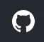

Logiciel monitor version 2.2.0 maj manuel 2.2.1 du
27/07/2023
Logiciel monitor version 2.2.0 maj manuel 2.2.1 du
27/07/2023Dernières modifications :
guides/modifications
 Tous les fichiers sont sur Github :
- :doc:’sommaire’
0._Infos pour bien débuter
0.1Prérequis, installation : différents choix
Après l’installation de Proxmox :
Installation automatique : conteneur LXC, LEMP (Linux, Nginx, Maria DB, PHP),
monitor :
installation automatique : LEMP + monitor (pour installation dans
une VM ou une partition Linux) :
installation uniquement de monitor (pour une installation avec
LAMP, MySQL,) :
0.1.1 installation automatique d’un conteneur LXC +LEMP+ monitor - L’installation de Proxmox voir ce paragraphe.
Création d’un conteneur LXC
Debian 12, et les dépendances sudo, curl, ….
- Nginx, PHP 8.2, maria db, phpMyAdmin, monitor - Quelques programme python utiles : pip, Paho-mqtt - Un utilisateur système est crée- Un utilisateur MySQL PMA et monitor est aussi créeTélécharger depuis le Shell de PVE le fichier d’installation install.sh :wget
Donner des autorisations au fichier « create_ct_lxc_monitor.sh » chmod +x create_ct_lxc_monitor.sh

Si des problèmes de lecture existent, convertir le fichier en
UNIX – installer do2unix : apt install dos2unix
ocommande : dos2unix NOM_FICHIER (ex : dos2unix
lemp_install.sh)
|
|---|
Installation : ./create_ct_lxc_monitor.sh


Choisir le langage UTF-8 : fr_FR.UTF-8


Sécuriser Maria DB, mot passe root


créer un certificat SSL auto-signé pour Nginx
Il suffit de répondre (O)ui pour créer ce certificat, sinon taper (N)on


TAB, ENTER

Vérifications en cas de problèmes :

Pour accéder en écriture aux fichiers dans /www/html/monitor, donner des droits :
chmod -R 777 /www/html/*

MySQL :
mysql -u root


Ou en ajoutant l’adresse dans le navigateur :


Les tables installées lors de l’installation :

La suite : ICI
 - Soit cloner le référentiel :Commande : git clone <REPERTOIRE_DESTINATION> Git doit avoir été installé : sur Debian ou Ubuntu, apt install git- soit télécharger en bash avec wget :
- Soit cloner le référentiel :Commande : git clone <REPERTOIRE_DESTINATION> Git doit avoir été installé : sur Debian ou Ubuntu, apt install git- soit télécharger en bash avec wget :Et apprès avoir rendu exécutable le fichier, le lancer :


Choisir le serveur web pour une installation de monitor dans le bon répertoire ;
Choisir « autre » si Apache ou Nginx ne sont pas utilisé, monitor sera installé dans « /tmp » il suffira alors de créer un lien symbolique vers le serveur web.
Si un répertoire « monitor » existe déjà sur le chemin choisi (précédente installation), le supprimer


0.1.3.1 mode « découverte »
IMPORTANT : après l’installation le programme est en mode « découverte », pour utiliser Domoticz et toutes les fonctions nécessitant des tables de la base de données, désactiver le mode « découverte » ;
En profiter pour changer le mot de passe actuel 1234
Pour cela soit :
Utiliser la fonction du programme


Modifier le fichier /admin/config.php


Pour utiliser Domoticz ou Home Assistant ou les 2 : Indiquer l‘ IP et le port


req : cette commande spécifie que nous voulons utiliser la gestion des
demandes de signature de certificat (CSR) X.509. (C’est une norme d’infrastructure à clé publique à laquelle SSL et TLS adhèrent pour sa gestion des clés et des certificats).
-nodes: pour ignorer l’option de sécurisation de notre certificat avec
une phrase secrète. Une phrase secrète empêcherait Nginx de démarrer normalement car il faudrait saisir la phrase secrète à chaque démarrage.
-out: emplacement du certificat créé.
Les deux fichiers créés sont placés dans les sous-répertoires appropriés du répertoire /etc/ssl


C’est assez long

Ctrl X, Enter, ctrl X
# from https://cipherli.st/ |
|---|
# and https://raymii.org/s/tutorials/Strong_SSL_Security_On_nginx.html ssl_protocols TLSv1 TLSv1.1 TLSv1.2;
ssl_prefer_server_ciphers on;
ssl_ciphers “EECDH+AESGCM:EDH+AESGCM:AES256+EECDH:AES256+EDH”;
ssl_ecdh_curve secp384r1;
ssl_session_cache shared:SSL:10m;
ssl_session_tickets off;
ssl_stapling on;
ssl_stapling_verify on;
resolver 8.8.8.8 8.8.4.4 valid=300s;
resolver_timeout 5s;
# Disable preloading HSTS for now. You can use the commented out
header line that includes
# the “preload” directive if you understand the implications.
#add_header Strict-Transport-Security “max-age=63072000;
includeSubdomains; preload”;
add_header Strict-Transport-Security “max-age=63072000;
includeSubdomains”; add_header X-Frame-Options DENY;
add_header X-Content-Type-Options nosniff;
ssl_dhparam /etc/ssl/certs/dhparam.pem; |
|---|

Ajustez la configuration Nginx pour utiliser SSL : extrait de monitor.conf
server { listen 80 ;
listen [::]:80 ;
server_name 192.168.1.127;
# SSL configuration
listen 443 ssl ;
listen [::]:443 ssl;
include /etc/nginx/snippets/selfsigned.conf;
include /etc/nginx/snippets/ssl-params.conf;
root /www/html;
index index.php index.html index.htm;
location ~ \.php$ {
fastcgi_split_path_info ^(.+\.php)(/.+)$;
fastcgi_pass unix:/var/run/php/php8.2-fpm.sock;
fastcgi_index index.php;
fastcgi_param SCRIPT_FILENAME
$document_root$fastcgi_script_name; include fastcgi_params;
……
|
|---|


Avec OpenWeather l’API fournit la température ressentie, pour l’ajouter enregistrer le dispositif et
ajouter à accueil.php :
<p class=”text-centre”>T° ressentie :<span id=”temp_ressentie” style=”color:#ffc107;”></span></p> |
|---|
Script de remplacement
fonctions.php ->function meteo_concept($choix)

footer.php

0.3 _ Base de données Maria DB ; La base de données a été créée lors de l’installation du
serveur : nom=monitor (donnée lors de la création, il peut être différent)
Connexion en local : IP/phpMyAdmin

Pour les autorisations d’accès, voir le paragraphe concernant la configuration /admin/config.php
Elles ont été créées lors de l’installation automatique, pour l’installation manuelle :

En cas d ‘absence de base de données ou de mauvais paramétrages :

Ajout à la base de données des données fournie par Domoticz
0.3.1 Les variables
La correspondance entre les variables Domoticz ou HA et l’affichage sur les pages perso se fait par
l’intermédiaire de la BD « Domoticz » ; tables :
text-image
dispositifs (gère également les dispositifs
…….
Ex :


Table « dispositifs», ne sont concernés que les champs :


Accès au Shell par SSH2 depuis Domoticz sous Docker : sous Docker l’accès au Shell du serveur n’est pas possible, la parade consiste à passer par monitor.
Dans Domoticz, créer une variable avec les données ci-dessous :

Dans SQL :

Ou par Monitor : 

Exemple : redémarrer script après modifications
Ici systemctl restart sms_dz (script chargé de l’envoi des sms
et qui doit être redémarré si le fichier « connect.py » a été
modifié (ajout, remplacement de N° de tel)
Dans Domoticz : |
|---|


HA : URL:8123/api/states/sensor.liste_var (renvoie la liste des
dispositifs enregistrés comme input text)
Le template sensor : sensor.liste_var
template:
- sensor:
- name: “liste_var”
unique_id : 1234567890
state: >
{% for input_text in states.input_text %}
{{input_text.entity_id ~ “=” ~ input_text.state ~ “, ” }} {%
endfor %}
|
|---|

0.3.2 Les Dispositifs
Comme pour les variables, la table fournie une correspondance entre les dispositifs dans Domoticz ou HA et Monitor et une info sur le matériel (Zgbee, Zwave, et n° de nœud.) (Pour les dispositifs Domoticz n’enregistre pas le type de matériel)
Table « dispositifs »


La table permet en plus de gérer et modifier si besoin l’affichage de tous les dispositifs sans intervenir sur la page HTML ; pour les switches, les scripts pour commander l’allumage ou l’extinction sont générés automatiquement à partir des données de cette table.
idm : idm de monitor peut-être la même que idx ; c’est utile pour l’affichage des infos concernant un dispositif ; de plus cela permet de retrouver facilement un dispositif dans l’image svg du plan en faisant une recherche ;dans l’image cet idm est indiqué par « rel=idm »
Voir le paragraphe concernant les images svg
Matériel : pour les types zwave ou Zigbee
maj_js : types de mise à jour java script
- control // détecteur présence(on/off)- etat //porte, volet ,(closed/open)- Temp ou data // température, humidité, ph, M3/h, orp,…. toutes données ; temp est utilisé pour une raison historique, à l’époque où seules des mesures de températures étaient exploitées….il est préférable d’utiliser « data »


téléchargement : cameras.sql
Enregistrements de températures, tension ,…..

Exemple pour une table temp_meteo :

Téléchargement de temp_meteo.sql
0.4_ Le serveur http de NGINX :

Configuration : /admin/config.php

Extrait du fichier, fichier complet :
<?php
// NE PAS MODIFIER LES VALEURS EN MAJUSCULES——
//general monitor
define(‘URLMONITOR’, ‘monitor.xxxxxxx.ovh’);//domaine
define(‘IPMONITOR’, ‘192.168.1.7’);//ip
define(‘MONCONFIG’, ‘admin/config.php’);//fichier config
define(‘DZCONFIG’, ‘admin/dz/temp.lua’);//fichier temp
define(‘FAVICON’, ‘favicon.ico’);//fichier favicon , icone du
domaine dans barre url
// répertoire des images
$rep=’images/’;//ne pas changer
// images logo et titres
define(‘IMAGEACCUEIL’, $rep.’maison.jpg’);//image page accueil
pour écrans >534 px
define(‘IMAGEACCUEILSMALL’, $rep.’maison_small.jpg’);//image
page accueil pour écrans <535 px define(‘IMGLOGO’,
$rep.’logo.png’);//image logo
define(‘NOMSITE’, ‘Domoticz’);//nom principal du site
define(‘NOMSLOGAN’, xxxxxx’);//nom secondaire ou slogan
//
|
|---|
Les fichiers à la racine du site :


0.6_ Les styles CSS

Un extrait :

Les Media queries pour les différents écrans

Les images SVG peuvent être créées et modifiées un éditeur de
texte
Les images SVG peuvent contenir du javascript
Les images SVG sont zoomables
Les graphiques SVG ne perdent aucune qualité s’ils sont zoomés
ou redimensionnés SVG est open source
Les fichiers SVG sont du pur XML
|
|---|

WebP est un format d’image moderne qui offre une compression supérieure avec perte et sans perte pour les images du Web
Les caméras sont au format jpg :

0.8_ Les fichiers PHP
Ils sont regroupés dans le dossier « include », sauf
fonctions.php, ajax.php, à la racine de monitor
/admin/config. PHP
/jpgraph

Affichage de graphique avec jpgraph


Les scripts python

La sortie des poubelles,
La gestion de la fosse septique,
La surveillance de la pression de la chaudière
Les anniversaires
Rappel pour la prise de médicaments
La prévision de pluie à 1 heure de Météo France
L’arrivée du courrier
La mise en service de l’alarme de nuit
Le remplacement des piles pour les capteurs concernés


Pour afficher cette page, les fichiers nécessaires en jaune
1.1– Configuration :/admin.config.php Il faut fournir un minimum de renseignements : 1.1.1 -Adresse IP , domaine, favicon de monitor,

Pour faciliter la réinitialisation des dispositifs dans Domoticz ou un transfert (ex, zwavejs2mqtt , zigbee2mqtt sous docker) ; en créant une copie de la table dispositifs (« dispositifs » par défaut), il est possible de préparer le transfert ; ici la table dispositifs a été renommer Dispositifs


1.1.1.a _Pour l’image de fond suivant la résolution d’écran et le logo :
// Monitor
define(‘IMAGEACCUEIL’, ‘images/maison.webp’);//image page
accueil pour écrans >534 px define(‘IMAGEACCUEILSMALL’,
‘images/maison_small.webp’);//image page accueil pour écrans
<535 px
define(‘IMGLOGO’, ‘images/logo.png’);//image logo
|
|---|

false= lexique à modifier /include/lexique_no.php |
|
|---|---|
define(‘NOMSITE’, ‘Domoticz’);//nom principal du site
define(‘NOMSLOGAN’, xxxxxxxxxxx);//nom secondaire ou slogan //
affichage lexique
define(‘LEXIQUE’, true);
|
|---|

1.1.2 intervalles de maj, maj temps réel
L’intervalle de mise à jour pour les services (poubelles, anniversaires, …) : il est de ½ heure (1800000 milli secondes), il peut être changé


TEMPO_DEVICES pour tous les dispositifs
TEMPO_DEVICES_DZ : pour les dispositifs qui mettent à 1 une variable pour indiquer à monitor d’effectuer une mise à jour, ici toutes les 30 secondes rafraichissement des dispositifs si par exemple un PIR, un contact de porte qui sont déclaré prioritaire dans DZ passent à ON

La fonction JS :

La fonction PHP qui récupère la valeur de la variable :


Paramètres de la base de données :

Paramètres pour Domoticz :

Le programme démarre avec 11 pages :
Accueil
1 Plan intérieur
Page d’administration, pour afficher cette page, le mot de passe
est obligatoire ; il est
toujours possible de modifier le fichier de configuration avec un éditeur.
Par défaut « admin »
1.2- Les fichiers à la racine du site, les styles, le javascript
1.2.1 - à la racine du site :
oIndex.php
<?php
echo ‘<!DOCTYPE html><html><body style=”background-color:
cornsilk;”>’;
$rep=”/”; $domaine=$_SERVER[‘HTTP_HOST’];
if ($domaine==”192.168.1.7”) $rep=”/monitor/”;
echo ‘
<script>
var larg = screen.width;
if (larg<769 ){ window.location.href=”’.$rep.’index_loc.php”;}
</script>’;
echo ‘
<iframe id=”inline_monitor”
style=”width:768px;height:1024px;margin:0 30%;background-color:
cornsilk;” src=”’.$rep.’index_loc.php”>
</iframe></body></html>’;
?>
|
|---|
oindex_loc.php
extrait , le fichier complet :
 fonctions.php,Extrait, voir le fichier à jour sur GithubPrincipales fonctions :- fonction status_variables($xx)
fonctions.php,Extrait, voir le fichier à jour sur GithubPrincipales fonctions :- fonction status_variables($xx)


API HA pour récupérer les valeurs des dispositifs

Fonction maj_variable et sql_variable : pour mettre à jour une variable et pour lire les tables
variables_dz et text_image SQL

API Domoticz pour les devices :

1.2.3 – Le javascript :1.2.3 a- Les fichiers footer.php , voir ce script1.2.3 b- le fichier mes_js.js : scripts principaux , fichier complet :
1.2.3 b.1 fenêtre modale modallink

1.3-Les fichiers principaux dans /include
1.3.1 entete_html.php
p

Le HTML du navigateur :

1.3.2 Test de la base de données, test_db.php :

1.3.3 le menu, header.php : les pages configurées avec config.php sont ajoutées automatiquement au menu

Pour modifier la largeur, Du menu :

Le HTML:

La fonction pour le rafraichissement des données à partir d’un changement d’état d’un dispositif dans Domoticz

Dans les scripts lua :


La variable
1.3.5.2 Quelques infos supplémentaires :

substring(0, 32) : modif du 11/05/2022 tronqué affichage ID ZWAVE très long
.substring(0, 11)==”Set Level: ajouté le 15/5/2022

La fonction maj_services récupère les valeurs de toutes les variables. La fonction maj_variable modifie la valeur d’une variable.
La fonction maj_devices(plan) récupère les données des dispositifs Un exemple avec set ou get Attribute

Voir le paragraphe concernant les volets

Le HTML :


Maj_devices(plan) : pour l’installation minimale, ne concerne que la maj de la température extérieure et de la date ; lorsqu’une tablette reste connectée en permanence, donc sans rafraichissement , la date affichée doit être rafraichie.
Une autre solution pour la maj de la date : un script qui tourne en permanence sur la tablette : je n’ai pas retenu cette solution car un script dans Domoticz gère très bien la gestion du temps.
Pour info cette autre solution :
fonction date_heure(id)
{
date = new Date;
|
|---|
annee = date.getFullYear();
moi = date.getMonth();
mois = new Array(‘Janvier’, ‘Février’, ‘Mars’, ‘Avril’,
‘Mai’, ‘Juin’, ‘Juillet’, ‘Août’, ‘Septembre’, ‘Octobre’,
‘Novembre’, ‘Décembre’);
j = date.getDate();
jour = date.getDay();
jours = new Array(‘Dimanche’, ‘Lundi’, ‘Mardi’, ‘Mercredi’,
‘Jeudi’, ‘Vendredi’, ‘Samedi’);
h = date.getHours();
if(h<10)
{
h = “0”+h;
}
m = date.getMinutes();
if(m<10)
{
m = “0”+m;
}
s = date.getSeconds();
if(s<10)
{
s = “0”+s;
}
resultat = ‘Nous sommes le ‘+jours[jour]+’ ‘+j+’ ‘+mois[moi]+’
‘+annee+’ il est ‘+h+’:’+m+’:’+s;
document.getElementById(id).innerHTML = resultat;
setTimeout(‘date_heure(“’+id+’”);’,’1000’);
return true;
}
|
|---|

Pour que les icones sur la page d’accueil soient affichées, il faut enregistrer les variables dans
la base de Données Maria DB,
La table dispositifs

La table d’équivalence texte ->images : text_image


Pour les Anniversaires, il faut entrer chaque prénom ou nom dans la base de données, ces noms correspondent à ceux du script LUA décrit ci-après :


1.4 Le lexique et la température extérieure :
1.4.1 Le lexique :
L’image est inline dans header.php
La fenêtre modale dans /include lexique .php ou lexique_no.php (le fichier est choisi par la
configuration) :


Pour ne pas utiliser de lexique et donc de supprimer l’icône : 
Supprimer ou mettre en commentaire

1.4.2 La température extérieure (valable pour d’autres dispositifs) :

Le fichier Json reçu par monitor après une demande de la fonction devices(plan):

1.5 liens avec Domoticz ou Home Assistant
1.5.1 Liens avec Domoticz
Le script maj_services : concerne :
- les poubelles- la fosse septique- les anniversaires- la gestion des piles des dispositifs- ….et plus encore
Affichage sur monitor, sur la TV et notifications SMS
Ce script met à jour, suivant l’horaire et la date, des variables Domoticz ; quand javascript demande une mise à jour, il appelle, par l’intermédiaire d’un fichier ajax.php, une fonction PHP (status_variables), qui récupère toutes les infos (API Domoticz) et renvoi un fichier Json
Variables Domoticz :
les 2 variables not_tv_* : pour le script notifications_tv.lua

.

Le fichier LUA


Remarque :
D’une année à l’autre, certains jours de ramassage des poubelles peuvent être modifiés :
Pour en tenir compte dans Domoticz, voir ci-dessous (§1.5.1) les lignes de code à ajouter :
Il est possible de mettre les variables (string et tableau dans un fichier, voir ci-dessous 1.8.1
Dans Log :

1.5.1.1 les variables lua de configuration dans un fichier externe
Les jour de ramassage des poubelles peuvent changer, le nombre d’anniversaires augmenter, toutes les variables correspondantes à ces valeurs peuvent être inséré dans un fichier appelé dans le script lua ; pour les anniversaires on utilise un tableau multidimensionnel, plus facile à compléter que 2 tableaux, si les données sont importantes.
De plus ce fichier peut alors être modifié dans monitor sans intervenir dans Domoticz, voir le paragraphe concernant l’administration
Dans ce cas il faut que le fichier soit accessible en http, il faut donc créer un répertoire « modules_lua » dans « /home/USER/domoticz/www »
Exemple le fichier /home/USER/domoticz/www/modules_lua/string_tableaux.lua, affichage dans monitor

Utilisation dans dz event pour une maj depuis monitor, voir le paragraphe « administration »

On place le fichier string_tableaux.lua dans ce répertoire

Dans le script LUA, on appelle ce fichier, en ayant indiqué le chemin :
– chargement fichier contenant les variables de configuration package.path..”;/home/USER/domoticz/www/modules_lua/?.lua” require ‘string_tableaux’ |
|---|
Le script maj_services devient :


Extrait du fichier maj_services modifié

1.5.1.2 les scripts de notifications gérées par Domoticz
Alarmes SMS ou Mail , le script LUA : ‘notifications_variables’
https://raw.githubusercontent.com/mgrafr/monitor/main/scripts_dz/lua/notification_variables.lua

Le script DZEvent : notifications_devices :

notification-timer.lua :
– notifications_timer local time = string.sub(os.date(“%X”), 1, 5)
return {
on = {
timer = {
‘at 23:00’,
‘at 06:00’,
}
},
execute = function(domoticz, item)
domoticz.log(‘alarme nuit: ‘ .. item.trigger)
if (time==’23:00’) then
if(domoticz.devices(‘al_nuit_auto’).state == “On”) then
domoticz.devices(‘alarme_nuit’).switchOn();print(‘al_nuit=ON’)
end
elseif (time==’06:00’) then
if(domoticz.devices(‘al_nuit_auto’).state == “On”) then
domoticz.variables(‘alarme’).set(‘alarme_auto’);
domoticz.devices(‘alarme_nuit’).switchOff();print(‘al_nuit=OFF’)
end
end
end
}
|
|---|


Réponse de l’API sur l’état :


La fonction PHP

Comme pour Domoticz une commande dans monitor appelle l’api qui exécute la commande
footer.php : départ de la commande avec le script créé automatiquement depuis la base de données


ajax.php :

La fonction PHP ci-dessus retourne pour les capteurs binaires :

En plus clair :

……………….Pour les interrupteurs réels : l’API retourne un tableau vide , d’où un appel de l’API/states pour avoir une confirmation du changement d’état.
Pour faire des essais à partir d’un navigateur :

1.6 – Lien avec la base de données SQL
1.6.1- exemple avec la date de ramassage des poubelles
En Dordogne, les poubelles jaunes sont ramassées toutes les 2 semaines mais les poubelles grises sont ramassées selon une procédure différente :
Il faut au préalable ajouter une table dans la base de données
– |
|---|
– Structure de la table `date_poub` – CREATE TABLE `date_poub` (
`num` int(11) NOT NULL,
`date` text NOT NULL,
`valeur` text NOT NULL,
`icone` text NOT NULL
) ENGINE=InnoDB DEFAULT CHARSET=utf8;
|
|---|
Les 2 icones svg |
age:: vertopal_6e277aed43794de08d a7229da055806a/media/image209.png
|
|---|---|

La page d’accueil :

|
|---|


function sql_app($choix,$table,$valeur,$date,$icone=’’){
// SERVEUR SQL connexion
$conn = new mysqli(SERVEUR,UTILISATEUR,MOTDEPASSE,DBASE);
if ($choix==0) {
$sql=”INSERT INTO “.$table.” (num, `date`, `valeur`,
`valeur`) VALUES (NULL, ‘”.$date.”’, ‘”.$valeur.”’,
‘”.$icone.”’);”;
$result = $conn->query($sql);
;}
if ($choix==1) {
$sql=”SELECT * FROM “.$table.” ORDER BY num DESC LIMIT 24”;
$result = $conn->query($sql);
$number = $result->num_rows;
while($row = $result->fetch_array(MYSQLI_ASSOC)){
echo $row[‘date’].’ ‘.$row[‘valeur’].’ <img
style=”width:30px;vertical-align:middle”
src=”’.$row[‘icone’].’”/><br>’;
}
}
$conn->close();
return;}
|
|---|
Et pour ajouter l’icône au fichier json concernant les variables :

Le json :

Avec phpMyAdmin :

Les enregistrements sont sauvegardés, pour afficher l’historique des dates, voir le paragraphe 11 concernant les app diverses (l’affichage log de dz et Nagios, …)


Modification à apporter au fichier : /js/big-Slide.js :

Pour descendre le menu : modifier la class .nav dans css/mes_css.css

2._ Une 1ere PAGE : LE PLAN INTERIEUR
2.1 l’image
Pour construire l’image du plan au format svg on utilise
Les avantages d’utiliser des images svg c’est de pouvoir manipuler le contenu avec javascript dans le DOM. Pour cela l’image doit faire partie complètement du HTML, l’url de l’image ne suffit pas.
Comme on ne peut pas charger uniquement cette url avec par exemple <img src= ’’image.svg ‘’>, il faut inclure cette image dans un fichier PHP et faire un include : < ?php include (‘image_svg.php’) ;?>
Il n’est pas facile au début d’utiliser ces logiciels pour construire complètement un plan ; une autre solution est de construire le plan au format jpg ou png avec un outil graphique plus facile à utiliser, Photofiltre, Paint ou Gimp et de convertir ensuite l’image au format svg en ligne avec par exemple :

On construit les murs extérieurs de la même façon ; on peut ajuster l’épaisseur en utilisant la barre supérieure

Pour modifier les objets :

Toujours avec un rectangle, on ajoute les pièces

On peut faire du copier/coller

Pour regrouper des objets de même couleur ou d’un même ensemble : GROUPER

Pour dégrouper :

Pour les textes
 Améliorer l’emplacement des ouvertures :On reste dégroupé et on trace un rectangle autour des murs
Améliorer l’emplacement des ouvertures :On reste dégroupé et on trace un rectangle autour des murs

Contrairement à Adobe Illustrator , Inkscape ne gère pas les feuilles de style mais celles indiquées sont afficher dans les navigateurs.
Pour ajouter des class pour gérer les changements de couleur dans monitor pour certains dispositifs :

On donne un nom à cette classe :

L’objet avec la class :

Lans le fichier .svg

Remarque :

On ajoute aussi une class aux textes

La feuille de style complète pour le plan

L’image est centrée au milieu du calque , on la déplace à l’angle droit haut

On fait correspondre l’image avec la page

On sauvegarde l l’image
On nettoie le code et on créer un fichier PHP qui contiendra l’image ; pour que cette image soit modifiable par le DOM, elle ne peut être appelée directement comme pour les formats classiques mais chargée entièrement dans le fichier HTML.
Avant nettoyage :

Après nettoyage : on supprime la partie ci-dessus (jusqu’à « <style>) et on la remplace par :
<svg version=”1.1” id=”Calque_1” viewBox=”0 0 150 150”> |
|---|

Pour comprendre viewbox :
Affichage dans monitor (on peut ajouter une marge pour centrer l’image) 534x720 : tablette chinoise


PC : 1200x612
La construction est sensiblement la même, la différence pour notre sujet, réside dans la description
des ID ; Inkscape ajoute des id partout, AI en ajoute aucun, sauf si on le spécifie, comme ci-dessous ;
Il est impératif pour retrouver facilement les objets d’ajouter les id à la construction.


Les cercles ici indiquent lorsqu’ils clignotent, un changement de piles à prévoir ; le N° qui sui « cercle » est l’id du dispositif.
Dans Inkscape, lors de la construction, il est possible d’ajouter du javascript, avec AI, il faut l’ajouter avec un éditeur de texte ou dreamweaver.

Attention aux styles après construction :

Un style qui existe alors qu’il n’est pas utilisé crée une erreur
Mon plan avec AI : dans le paragraphe suivant la première version de ce plan faite
avec une conversion png->svg

2.1.2 – 2eme solution pour le plan, conversion en ligne

Mon fichier floorplan.png

Conversion avec Autotracer :


Avec Inkscape :
Les textes transformés ne sont pas toujours lisibles, il faut modifier le plan, on ajoute des rectangles de la même couleur :

2.1.3 – Les couleurs
Choisir des couleurs web : 6 familles (#00xxxx, #33xxxx, #66xxxx, #99xxxx, #CCxxxx, #FFxxxx),
216 couleurs, ce qui limite ne nombre de class ; un seul fichier de class pour tout le site… la
construction est plus longue et là aussi il faut le faire depuis le début


3 


Redimensionner l’(les)objet(s) :

Comme on peut le voir, avec les images svg le remplacement de couleur, de textes s’effectuent rapidement lors de la création ; il en est de même dans le HTML en utilisant javascript
Ajouter un texte « tmp » par exemple pour l’affichage de la température ; ce texte sera remplacé par la valeur de la température ; les détecteurs de présence peuvent souvent enregistrer la température.

Pour les dispositifs et les textes, ajouter un ID :
Avec Inkscape, il est possible d’ajouter facilement un ID lors de la construction de l’image

La couleur de l’objet :

Avec Adobe Illustrator :

Enregistrer le fichier, j’ai choisi « interieur.svg », le nom de ma page

Pour les textes c’est la même façon de procéder

Aperçu d’une image avec de nombreux dispositifs

2.2 Des exemples d’autres dispositifs :
2.2.1 Ajout du détecteur de fumée :
Ajout de l’icône avec Inkscape :


Dans les paramètres de l’objet on a ajouté :
Un href, un id, un titre et un onclick avec un id (idm ou idx) ; option choisie dans /admin/config.php

2.2.2 Ajout de caméras
Comme il n’existe pas d’idx Domoticz, nous réserverons la plage >= 10 000 pour cela ; cette valeur peut être modifiée, voir le paragraphe 2.2.1
2.3 le fichier PHP de l’image
Avec Notepad, on supprime les premières lignes (Inkscape), comme indiqué au §2.1.1 ou les 2 ou 3 premières lignes (AI) :

Enregistrer l’image au format PHP dans le dossier /include: interieur_svg.php (utilisé ici)
Récupérer dans Domoticz les noms et les idx des dispositifs

Dans la table « dispositifs » de la base de données Maria DB Domoticz, enregistrer ces données ; si c’est une première installation de monitor, idm peut être le même qu’idx ; dans l’exemple ci-dessous idm est différent après une réinstallation de Domoticz.

Autre exemple :


Que fait le script javascript qui gère les dispositifs :

L’appel ajax : appelle la fonction PHP devices_plan($variable), la variable est le N° du Plan

La fonction PHP :

Le Json renvoyé :

Monitor peut afficher un changement de couleur du dispositif, une température mais à condition de retrouver l’ID du dispositif ou l’ID du texte dans le DOM.
C’est pourquoi nous avons ajouté des ID lors de la construction du plan.
Un aperçu du fichier interieur_svg.php :
Pour une icône avec une seule couleur, l’ID de l’icône est suffisant mais avec une icône où une seule partie est colorée comme pour l’ouverture de porte, ii est facile, avec F12 d’inspecter la partie de l’icône qui nous intéresse et de rajouter un ID dans le <path concerné :

C’est alors cet ID qu’il faudra entrer pour le dispositif dans la Base de données SQL.

Pour les textes, si l’ID n’a pas été spécifié à la construction de l’image, ils sont faciles à retrouver avec une recherche sur Notepad pour ajouter un ID ;
Sur AI il faudra souvent modifier légèrement l’ID

2.3.1 Pour afficher le statut complet du dispositif :

Cette fonction est activée par un onclick que l’on ajoute dans l’image ; par contre la BD n’est pas nécessaire pour cet affichage, à condition que le onclick possède comme id l’idx de Domoticz.

Avec Inkscape ce onclick peut être ajouter lors de la construction, avec AI il faut l’ajouter manuellement comme ci-dessus :


Pour indiquer que l’élément est cliquable, comme pour le HTML, on ajoute une balise <a ; non nécessaire surtout pour les tablettes.

Ou lors de la construction avec Inkscape :

Où :

2.3.2 Affichage des caméras :
Pour les caméras génériques chinoises, pour les configurer : Internet explorer est le seul navigateur qui permet d’afficher Net Surveillance

La table « cameras » dans la base de données SQL a été remplie, voir le paragraphe concernant la base de données au début de ce document

Seulement si Zoneminder est utilisé :
Pour retrouver l’ID Zoneminder pour toutes les cameras :
Dans un navigateur : IP DE ZONEMINDER/zm/api/monitor.json


Les icones, les onclick, les <a pour le lien, ont été ajoutés sur le plan ; une fenêtre (modal) est ajoutée
sur la page.
Voir paragraphe 2.1.2 : ajout dans l’image du plan
Voir paragraphe 2.3 : fichier PHP de la page avec les fenêtres modales La modale pour la fenêtre de l’image :

C’est la fonction PHP « upload_img($idx) » appelée par ajax qui renvoi l’image de la caméra

Le script JS dans footer.php :


L’affichage de cette config est géré par un script JS : modalink et non par une fenêtre modale
qui est déjà ouverte pour l’image ; appel de ce script par le bouton dans la modale de
l’image : voir également paragraphe 2.3

Les script JS, dans footer.php et dans mes_js.js : Dans footer.php :


Dans mes_js.js :
Le fichier ajax.php et Le script PHP, function cam_config($marque,$type,$ip,$cam,$idzm), (dans fonctions.php)

Extrait de la fonction cam_config du fichier :
Pour caméras DAHUA :

Modification CURL pour les différents types d’Autorisation des caméras Dahua :
|
|---|

Pour caméras onvif autres :
Assurée par la fonction PHP devices_plan (), vue précédemment ; la variable dans la base de
données SQL a aussi été décrite lors de la configuration minimale
Table « dispositifs » : variables

Table « text_image » :

accueil.php

css : |
|---|
Pour une meilleure visualisation des dispositifs dont la pile est à remplacer, un ajout sur l’image du plan d’un signe distinctifs : un cercle clignotant.
Pour une meilleure compréhension, toute la gestion des piles sera décrite ici ;
Dans un cadre jaune, ce qui devra être ajouté, le reste ayant déjà été créé (variables Domoticz et SQL, images svg, …


Variables Domoticz :

Le script dz :
Sur la page d’accueil

Sur la page des dispositifs


En plus d’une gestion globale, un cercle clignotant indique que la pile devra être remplacée
sur le dispositif concerné.
Ce cercle visible selon l’état de la batterie est ajouté au plan :
|
|---|

Il suffit d’ajouter en copier/coller des cercles à tous les dispositifs sur piles.
Les valeurs sont définies dans le fichier de configuration /admin/config.php :

2.3 4 Le contrôle de la tension d’alimentation :

On enregistre cette image dans un fichier PHP (on supprime les lignes inutiles).
On ajoute aussi un ID

Le dispositif Domoticz :

La base de données SQL :


2.3.6.1 Le capteur dans Domoticz :


Dans le plan de Domoticz :

2.3.6.2 Le capteur dans la BD :

On a choisi de limiter le nb de caractère à 4, à l’origine : 
|
|---|

Le fichier Json


<!– section TITRE start –>
<!– ================ –>
<div id=”ID DE LA PAGE” class=”CLASS DE LA PAGE OPTIONNEL”> <div
class=”container”>
<div class=”col-md-12”>
<h1 class=”title_TITRE text-center”> exemple Prévisions<span>
météo</span></h1>
<div class=”CLASS DU CONTENU” style=”color:black;”> <div id=”ID
DE CETTE LIGNE” >LIGNE OPTIONNELLE</div>
<div id=”CONTENU” class=”table-responsive”></div> <div id=”AUTRE
CONTENU OPTIONNEL”></div>
</div> </div>
</div>
</div>
<!– fin de la section TITRE –>
|
|---|
En Bleu du contenu optionnel

Sur cette page, des fenêtres(modal) peuvent être ajoutées si besoin, Bootstrap facilite la création ; sur la page décrite en suivant, 2 fenêtres sont ajoutées.
Le menu :

Le fichier interieur .php

Le fichier index_loc.php : pour info, en général ne pas modifier ce fichier

Le fichier include/header.php :


2.5 F12 des navigateurs pour faciliter la construction
Pour les PIR, les capteurs d’ouverture, pour le changement de couleur :

2.6 Les dispositifs virtuels Domoticz et MQTT
Pour monitor ça n’a pas d’importance, il n’y a pas de notion « virtuel – réel » mais la mise à
jour de ces dispositifs dans Domoticz n’est pas toujours facile surtout pour les dispositifs
avec plusieurs valeurs tels que température+ Humidité température +batterie, …
Un script dz : séparation_valeurs.lua

Depuis Domoticz 2021.1

3._ Météo

L’API est gratuite chez Météo Concept mais il faut s’enregistrer pour obtenir une clé Le PHP : dans fonctions.php


Le JS dans footer.php

Pour la mise à jour auto chaque matin :

Le HTML : la page meteo.php


Il faut ajouter la page au site ; la procédure est toujours la même : : dans config.php, Mettre la variable à « true » ; il faut au préalable demander un token gratuit.

Dans header.php, l’affichage dans le menu est alors automatique.

La page meteo.php :

Les css : en plus du style pour la page :

Les icones :


accueil.php :

Les icones svg « pluie imminente » et « pas de pluie » :
|
|
|
vertopal_6e277a ed43794de08da72 29da055806a/med ia/image385.png
ight: 1.04167in |
|---|---|---|---|


Footer.php :

PHP : ajax.php et fonction PHP « app_met($choix) » ajax.php :

Dans fonctions.php :
2 |
Choix : |
|
|---|---|---|
(1) en HTML sur le site |
Indiquer Commune-Code postal- (2) par météo France et son API avec un Token

La base de données : correspondance texte – image, la table text_image

Voir le site

3.3_ Autres prévisions météo depuis météo Concept :
relevés temps réel depuis une station :
prévision heure par heure : peut remplacer Darsky (devenu payant) ou
OpenWeatherMap,
c’est français et plus facile d’utilisation, nombreux exemple sur le site web Méteoconcept


4._ La page du plan extérieur

La construction est la même que pour la page inteieur.php.
Le chargement des pages se faisant dès l’appel de l’url, pour éviter les class similaires dans l’image svg, si elle a été créée avec Adobe Illustrateur), il est impératif de les renommer.
Nettoyage : Ces lignes ne servent à rien : les enlever

L’image est sauvegardée par exemple en « exterieur_svg.php » (un fichier avec l’extension
.php) :
4.1 – La page PHP : exterieur.php :


4.1 .1– Ajouter des lampes
Apres avoir téléchargé une image svg ajouter les icones au plan
Pour commander les lampes : un interrupteur virtuel dans Domoticz ou un interrupteur réel (Zigbee ou Zwave) avec son double dans Domoticz

Un double de cet interrupteur sera aussi ajouté à Monitor, c’est l’objet du chapitre « mur ON/OFF »
La table « dispositifs » SQL :


Pour chaque lampe, on indique la class dans l’image svg : avec le navigateur et F12 c’est le plus simple car une class pour la couleur existe déjà, il suffit d’ajouter la class choisie ; dans l’attribut class, il faut séparer les class avec un espace.

La fonction maj_devices, déjà décrite pour les IDs des dispositifs, la partie du script consacrée aux lampes :

Il n’existe pas de commande simple en javascript, comme pour les IDs, pour effectuer des changements d’attribut ; les ID sont uniques alors que les class peuvent être utilisées de nombreuses fois ; il faut donc balayer tous les éléments pour les rechercher, c’est ce que fait la fonction « class_name »
4.2. – affichage :
Il suffit, comme pour toutes les pages optionnelles ne mettre la variable à « true » :

5. – L’ALARME
Pour l’activation ou l’arrêt par GSM voire ce paragraphe qui traite du script python avec les codes retenus pour l’alarme. $ 18.4

Pour entrer le mot de passe : redirection vers la page administration
5.1 Dans Domoticz, les interrupteurs virtuels
Les boutons poussoir marche/arrêt pour les commandes :
- m/a alarme de nuit- m/a alarme absence- m/a al_nuit_auto- m/a sirène- m/a mode detect des caméras- poussoir de reset des valeurs de Domoticz,- activation/désactivation de la sirène : permet de faire des essais sans nuisances sonores ; la sirène est toutefois indiquée ON ou OFF

Pour le test sirène : un interrupteur « PUSH »


On ajoute les dispositifs au plan ; le plan peut se résumer à un simple cadre ou être très simplifié, il ne sert qu’à regrouper les dispositifs pour récupérer les données avec un seul appel à l’API json


Création de variables, initialisée à 0
ma-alarme :

o alarme non activée,
o1 alarme absence activée, les capteurs PIR sont pris en compte
o2 alarme nuit activée, les capteurs PIR sont ignorés
modect : pour la mise en service de la détection par caméras (non
utilisé actuellement, pour
une notification en page d’accueil ou autre …)

porte-ouverte
intrusion
- alarme : sera utilisée pour un affichage sur la page d’accueil ; il est plus facile de créer une variable supplémentaire qui contiendra un texte pour pouvoir faire une équivalence texte- image dans la BD- activation-sir-txt, texte activation de la sirène : activer ou désactiver


Notifications : notifications_devices.lua


Script notifications_timer.lua, lignes concernées :
– notifications_timer local time = string.sub(os.date(“%X”), 1, 5)
return {
on = {
timer = {
‘at 23:00’,
‘at 06:00’,
}
|
|---|
},
execute = function(domoticz, item)
domoticz.log(‘alarme nuit: ‘ .. item.trigger)
if (time==’23:00’) then
if(domoticz.devices(‘al_nuit_auto’).state == “On”) then
domoticz.devices(‘alarme_nuit’).switchOn();print(‘al_nuit=ON’)
end
elseif (time==’06:00’) then
if(domoticz.devices(‘al_nuit_auto’).state == “On”) then
domoticz.variables(‘alarme’).set(‘alarme_auto’);
domoticz.devices(‘alarme_nuit’).switchOff();print(‘al_nuit=OFF’)
end
end
end
}
|
|---|

L’utilisation de timer= at hh :mm-hh :mm ne peut être utilisé ; j’ai essayé isTimer mais ça ne
fonctionne que pour ON ; else avec isTimer ne fonctionne pas.
Ajout du script « alarme_intrusion.lua dans évènements de Domoticz :


Pour l’activation ou la désactivation :

Pour allumer des lampes :

Pour ajouter des dispositifs :

Le fichier pushover.sh :
#!/bin/bash
TITLE=”Alerte”
APP_TOKEN=”xxxxxxxxxxxxxxxxxxxxxxxxxxxxxxxxxx”
USER_TOKEN=”xxxxxxxxxxxxxxxxxxxxxxxxxxxxxxxxxxxx” MESSAGE=$1
echo $1
curl -s -F “token=$APP_TOKEN” \
-F “user=$USER_TOKEN” \
-F “title=$TITLE” \
-F “message=$MESSAGE” \
|
|---|
Ou en Python :
#!/bin/python |
|---|
import requests,sys
x= str(sys.argv[1])
r = requests.post(“https://api.pushover.net/1/messages.json”,
data = { “token”: “xxxxxxxxxxxxxxxxxxxxxxxxxxxxxxxxxxx”,
“user”: “xxxxxxxxxxxxxxxxxxxxxxxxxxxxxxxxxxxxxxxxx”,
“message”: x
})
print(r.text)
|
|---|
Voir les pages du site ,
Et
Résumé des scripts Domoticz concernés :

5.1.1 explications concernant MODECT
Si l’alarme absence est activée les caméras autorisées passent en mode MODECT
automatiquement.
Dans les autres cas Modect peut être activé manuellement.


Il faut avoir installé Zoneminder
5.1.1.1 Jeton ZM
Dans fonctions.php :


Le format du fichier est json pour une exploitation facile avec Domoticz 5.1.1.2 le script lua :

Le fichier string_modect est écrit automatiquement dans « administration »


Le choix des caméras se fait dans la BD :

5.2 Construction de l’image
On ajoute les composants avec Inkscape, les ID pour les changements de couleur, pas besoin de onclick, il n’y a que des dispositifs virtuels.
La construction de la page est identique à celle du plan intérieur.
Les boutons M/A sont réalisés avec 2 cercles de grandeur et de couleur différentes, les poussoirs simples (les mains) sont des icones téléchargées ; l’icône png de Domoticz a été convertie en svg.
|
:: vertopal_6e277aed4 3794de08da7229da05580 6a/media/image446.png
|
:: vertopal_6e277aed4 3794de08da7229da05580 6a/media/image447.png
|
|---|---|---|

On ajoute des zones de textes pour la date, les messages ,….


On enregistre l’image dans un fichier PHP, comme indiqué au paragraphe 2.2
On peut aussi ajouter les ID avec F12 du navigateur

Un extrait concernant le bouton « activation/désactivation de la sirène »


Comme on peut le voir pour l’alarme absence il a été préféré l’ID du cercle à l’ID de Inkscape


Il est aussi possible de renommer l’ID du cercle. Partie concernant les variables

5.4- Le PHP
alarme.php :

test_pass.php : surligné en jaune : pour admin.php, voir le § 13.2
|
|---|
echo “<script>
document.getElementById(‘tspan7024’).innerHTML=jour;
document.getElementById(‘console1’).innerHTML=text1;
document.getElementById(‘not’).innerHTML=’’;
</script>”;
?>
|
|---|


Le fichier config.php gère les mots de passe de l’alarme et de la commande des dispositifs (on/off)

Dans fonctions.php :

Le script qui commande les poussoirs M/A

5.5- Le Javascript, dans footer.php et mes_js.js Les scripts pour les mots de passe, dans mes_js.js

Et le script pour le clavier affiché dans administration


La fonction maj_services (footer.php) permet la mise à jour des textes « activer ou désactiver »
Le script pour afficher une modale « modalink »

5.7- Affichage d’une icône sur la page d’accueil :

Pour l’alarme de nuit, pour ne pas oublier de l’annuler le matin si la fonction auto n’a pas été choisie
css


accueil.php :

Dans Domoticz : la variable a déjà été crée
Quand l’alarme nuit est activée, son contenu :

La table text_images : correspondance entre le texte et l’image

La table variables_dz : la variable existe déjà, vérifier l’ID pour l’icone


5.8 - Améliorations utiles
5.8.1- la mise en marche automatiquement de l’alarme de nuità certaines
heures ;
On ajoute un bouton avec Inkscape ; pour cela :
On charge dans Inkscape le fichier PHP de l’image ; on accepte
l’avertissement car ce
n’est pas une extension svg.
On modifie l’image ; on ajoute un bouton
On sauvegarde l’image sous un autre nom, l’extension sera .svg
Comme précédemment avec les images, on la copie dans le fichier
avec l’extension
PHP.

5.8.1.1 Dans Domoticz,
On ajoute un poussoir virtuel : al_nuit_auto


On ajout le switch au plan


Le script lua notification_timer.lua :
return {
on = {
timer = {
‘at 23:00-11:00’,
}
},
execute = function(domoticz, item)
domoticz.log(‘The rule that triggered the event was: ‘ ..
item.trigger)
if(domoticz.devices(‘al_nuit_auto’).state == “On” and
item.isTimer ) then
domoticz.devices(‘alarme_nuit’).switchOn();print(‘al_nuit=ON’)
else
domoticz.devices(‘alarme_nuit’).switchOff();print(‘al_nuit=OFF’)
end
end
}
|
|---|
Le script lua notification_devices.lua :
|
|---|
Log :

5.8.1.2 Dans Monitor,
Pour cela on met à jour la table « dispositifs »


Comme pour tous les switch la commande a été ajoutée automatiquement sur la page HTML :

En page d’accueil

La table text_image :
L’image : L’image :
Emplacement du script :

5.8.2.1.2 aperçus
On simule un intru en modifiant manuellement la variable :
#!/usr/bin/env python3.7 -- coing: utf-8 -- x=’0’ |
|---|

On fait une copie de ce fichier : aldz.bak.py : ce fichier remplacera le fichier original pour remettre à 0 la variable et cesser d’envoyer des messages.

Dans Domoticz, pas besoin de créer une variable, simplement modifier le fichier aldz.py pour inclure à la variable x, le texte du SMS

Attention : si modem Ebyte, pas d’espaces et accents Le fichier sms_dz est modifié (simplifié) :

5.8.2.3- Option supplémentaire : le test de l’envoi de SMS

L’image de l’alarme : on ajoute,


Domoticz : on ajoute un interrupteur virtuel


On ajoute le dispositif au plan :


On ajoute qq lignes de script dans évènements dz notifications_devices.lua


L’exemple est intéressant car le clic s’effectue sur une partie de l’image transparente
footer.php
Le script est ajouté automatiquement à partir des données de la BD

Affichage de l’alarme, une ellipse rouge est affichée sur l’icône ‘ smartphone’ ; elle reste affichée jusqu’à la prochaine mise à jour de devices_plan() au plus tard : 3minutes par défaut mais modifiable dans config.php

5.8.3- Affichage de la liste des caméras Modect
Cette liste est établie automatiquement avec une fonction dans « administration »

Ajout d’une icone

alarmes.php :

<svg version=”1.1” id=”zm” xmlns=”http://www.w3.org/2000/svg”
xmlns:xlink=”http://www.w3.org/1999/xlink” x=”0px” y=”0px”
viewBox=”0 0 326 18” style=”width:500px” xml:space=”preserve”>
<style type=”text/css”>
.st208{fill:#03A8F3;}
.st207{font-size:13.5px;}
</style><a id=”zm” href=”#alarmes”>
<rect x=”0.9” y=”-0.7” class=”st208” width=”31.2”
height=”18.8”/>
<text transform=”matrix(1 0 0 1 5.4312 13.3434)” class=”st203
st33 st207”>Z M</text></a> </svg>
|
|---|
Dans footer.php , on appelle la fonction php sql_app() qui est déjà utilisé dans « administration »


Affichage :

5.8.5- Copie écran de la dernière version
Version 2.1.0 réécrite en DzVent avec :
1 script pour le timer
1 script pour les notifications à partir des dispositifs
1 script ppour les notifications à partir des variables
Le script principal de l’alarme

6. – GRAHIQUES & BASE DE DONNEES

Voir ces pages pour installer les scripts :

-
-
-
-
|
Jpgraph est installé avec le
cache php-gd est installé la bibliothèque python fabric est importé le module python mysql.connector est importé |
|---|---|


En absence de champ c’est le champ « valeur » qui est utilisé sinon : Value= « <TABLE>-<CHAMP> »

Avec 2 champs ou 3 champs
Création de la table avec phpMyAdmin :
CREATE TABLE `pression_chaudiere` (
`num` int(5) NOT NULL,
`date` timestamp NOT NULL DEFAULT current_timestamp() ON
UPDATE current_timestamp(),
`valeur` varchar(4) NOT NULL
) ENGINE=InnoDB DEFAULT CHARSET=utf8;
ALTER TABLE `pression_chaudiere` CHANGE `num` `num` INT(4)
NOT NULL AUTO_INCREMENT, add PRIMARY KEY (num);
|
|---|
6.2 Dans Domoticz,
Les données à enregistrer peuvent provenir de capteurs réels ou virtuels. Pour éviter un trop grand nombre de valeurs, il est utile pour certains dispositifs, de créer des variables pour comparer les valeurs et les limiter aux valeurs entières (c’est le cas de la météo Darsky, des capteurs de température Onoff).
Pour utiliser des données de la base SQL, il faut au préalable les avoir enregistrées depuis Domoticz : c’est le rôle de la bibliothèque fabric

Une fois crée un premier enregistrement pour une température dans la base, il suffira pour un nouvel enregistrement d’une autre t° d’ajouter dans le script LUA « évènement /export_sql » cette T°


Pour limiter le nb d’enregistrements :

Dans cet exemple, il a été créer 3 variables qui permettent des enregistrements dans la BD à chaque changement de valeurs limité au degré.:

Le script fabric.sh, installé ici dans le répertoire « scripts » de Domoticz

#!/bin/bash echo $1
echo $2
a=”#”
c=$1$a$2
echo $c
cd /home/michel/python
fab maintask –don=$c > /home/michel/fab.log 2>&1
|
|---|
Pour tester le script, il est plus facile de travailler dans le répertoire USER, c’est l’objet de la création du lien symbolique vers le dossier python de Domoticz


Le script fabfile.py

#!/usr/bin/env python2.7
# -- coding: utf-8 --
from fabric import Connection
from fabric.tasks import task
@task
def subtask(ctx, donn):
with ctx.cd(“/www/monitor/python”): ctx.run(donn)
@task( optional = [‘don’])
def maintask(ctx, don = None ):
con = Connection(host = ‘192.168.1.7’, user = ‘michel’,
connect_kwargs = {‘password’:’PASS’})
file = “python3 sqlite_mysql.py “
donn = file+don
print(subtask(con,donn)) |
|---|
Le script fabfile.py appelle sur le serveur qui héberge la BD le script sqlite_mysql.py; sqlite_mysql.py n’est exécuté que lorsqu’il est appelé, il n’écoute pas en permanence si des données sont envoyées

POUR RESUMER : sur le serveur de Domoticz
-script LUA→MENU Domoticz évènements |
|---|
-script fabric.sh→ ../domoticz/scripts/ |
|---|
-script fabfile.py→../domoticz/scripts/python/ avec ls /home/USER/python/ |
|---|
|
|---|
6.3 Sur le serveur de la base de données,Le serveur Nginx avec aussi Monitor, réception des datas Le script python sqlite_mysql.py :
#!/usr/bin/env python3
# -- coding: utf-8 --
import sys
import mysql.connector
from mysql.connector import Error
total_arg = len(sys.argv)
if (total_arg>0) :
x= str(sys.argv[1])
temp = x.split(‘#’)
|
|---|
table=temp[0]
champ=temp[1]
val1=temp[2]
val=temp[3]+” “+temp[4]
if (len(temp)==7) :
champ2=temp[5]
val2=temp[6]
try:
connection = mysql.connector.connect(
host = “127.0.0.1”,
user = “michel”,
password = xxxxxxxx”,
database = “domoticz”)
if connection.is_connected():
db_Info = connection.get_server_info()
print(“Connected to MySQL Server version “, db_Info)
cursor = connection.cursor()
cursor.execute(“select database();”)
record = cursor.fetchone()
print(“You’re connected to database: “, record)
if (len(temp)==7) :
query = “INSERT INTO “+table+” (date,”+champ+”,”+champ2+”)
VALUES(%> values = (val, val1, val2)
else :
query = “INSERT INTO “+table+” (date,”+champ+”) VALUES(%s, %s)”
values = (val, val1)
cursor.execute(query, values)
connection.commit()
print(cursor.rowcount, “Record inserted successfully into Laptop
table”)
except Error as e:
print(“Error while connecting to MySQL”, e) finally:
if (connection.is_connected()):
cursor.close()
|
|---|

6.4 Dans Monitor :
Le cache pour jpgraph est présent :

Jpgraph est installé à la racine de monitor

6.4.1 la page graphique.php

css

6.4.2 la fonction graph, dans fonctions.php et appelée par ajax.php ajax.php

fonctions.php

Accès base de données :export_tab_sqli.php et traitement des données par la BD

Suite de graph()

Voir la documentation sur jpgraph :
6.4.3 autres fichiers PHP :
- index_loc.php (en général ne pas modifier), config.php, header.php (en général ne pas modifier),Mettre la variable à « true » dans config.php

6.4.4 copies d’écran :


Ici la mémoire sera libérée des données cache et tampontous les jours à 12H ; plus d’ infos :

Il est important d’ajouter les caméras dans Zoneminder les unes après les autres sans en supprimer
afin que ces cameras suivent un ordre chronologique (1,2,3,4,5, 6, ……)
Voir la page :

7.1- les pages index_loc.php, header.php, entete_html.php Index_loc.php : en général, ne pas modifier

config.php

header.php

entete_html.php : pour le switch

7.2- la page de monitor : mur_cam.php

Le script du bouton On/Off , dans footer :


mur_cameras.php :

IMPORTANT : le fichier include/mur_cameras.php est indépendant du programme (‘est une image en retour) et de ce fait on ne peut utiliser les constantes définies dans admin/config.php
On va donc pour remédier à ce problème :
passer l’url en paramètre ainsi que l’Idx |
|
|---|---|
utiliser les variables de session pour le login et le mot de passe car ces données sont sensibles |

Les fichiers sont tous UTF-8 sans BOM et l’url des caméras doit se trouver dans mur_cam.php. (ZMURL dans mur_cam.php et non dans mur_cameras.php);

7.3- Les scripts JS pour la vidéo dans footer.php :
Le Zoom Bootstrap :


Les caméras ne sont pas en https, pour éviter les certificats, mais comme l’accès se fait en local (sur le réseau 192.168.1.x) et enregistre une image, sur le serveur, chaque 100ms pour recréer une vidéo, l’accès distant en https est assuré.

7.4- Ajouter une caméra

Il suffit d’indiquer dans /admin/config.php le nb de caméras
8.- MUR de COMMANDES ON/OFF

Les lampes :

8.1 les fichiers de base :
Index_loc.php en général ne pas modifier

header.php

mes_css.css


Extrait de la page html pour des commandes pour Domoticz et Home Assistant:

Le PHP :

8.2- mur_inter.php


Domoticz

Les capteurs virtuels sont mis à jour par MQTT et node-red depuis zigbee2mqtt Les script node-red : envoi vers domoticz/in

La réponse de Domoticz


…./domoticz/scripts/python/mqtt.py zigbee2mqtt/eclairage_ext/set state_l2 ON …./domoticz/scripts/python/mqtt.py zigbee2mqtt/eclairage_ext/set state_l2 OFF
#!/usr/bin/env python3.7
# -- coding: utf-8 --
import paho.mqtt.client as mqtt
import json
import sys
# Variables et Arguments
topic= str(sys.argv[1])
etat= str(sys.argv[2])
valeur= str(sys.argv[3])
MQTT_HOST = “192.168.1.42”
|
|---|
MQTT_PORT = 1883
MQTT_KEEPALIVE_INTERVAL = 45
MQTT_TOPIC = topic
MQTT_MSG=json.dumps({etat: valeur});
#
def on_publish(client, userdata, mid):
print (“Message Publié…”)
def on_connect(client, userdata, flags, rc):
client.subscribe(MQTT_TOPIC)
client.publish(MQTT_TOPIC, MQTT_MSG)
def on_message(client, userdata, msg):
print(msg.topic)
print(msg.payload)
payload = json.loads(msg.payload) # convertion en json
print(payload[‘state_l2’])
client.disconnect()
# Initiatlisation MQTT Client
mqttc = mqtt.Client()
# callback funRction
mqttc.on_publish = on_publish
mqttc.on_connect = on_connect
mqttc.on_message = on_message
# Connection avec le serveur MQTT
mqttc.connect(MQTT_HOST, MQTT_PORT, MQTT_KEEPALIVE_INTERVAL)
# Loop forever
mqttc.loop_forever()
|
|---|
https://www.eclipse.org/paho/index.php?page=clients/python/docs/index.php
Pour éviter des erreurs (512, 256), penser à convertir le fichier python en Unix s’il a été créé
avec Notepad++

Pour convertir le fichier en Unix : dos2unix CHEMIN/NOM DU FICHIER Attention aussi aux autorisations


Le plan : l’interrupteur est ajouté


Les lampes concernées en gris


La BD
un idm est nécessaire pour le tableau json en retour de la fonction « device_plan ». Pour afficher les propriétés de l’appareil

footer.php : pour la mise à jour de tous les dispositifs, mais avec un temps de réponse,
aussi pour la commande des interrupteurs un second script permet une mise à jour
instantanée


DOMOTICZ :Capteur virtuel :


Le script python :


Mur_inter.php

Base de données :


8.2.3 - Exemple éclairage simple, une lampe de salon :
Dans Domoticz :

On ajoute le matériel au plan qui regroupe tous les matériels

On le place sur le plan :


Dans monitor :
mur_inter.php

Exemple : Image lampe_bureau.svg

Image lampe: 


La base de données « monitor » (aussi appelée domoticz), table dispositifs

Résultat :

8.2.4 - Exemple volet roulant :


Le moteur est à 4 fils, piloté par une commande TUYA FT30F et Zigbee2mqtt.
Remarque : pour éviter que les commandes soient inversées dans Domoticz, mettre à TRUE le paramètre spécifique concernant cet interrupteur, dans le fronted de zigbee2mqtt

Pour utiliser le Javascript (comme pour le plan) il ne faut pas charger l’image par son nom mais l’incorporer dans un fichier PHP.

L’image svg :

Cette image a déjà été ajoutée au plan avec cette CLASS les ID étant uniques ;
ID « volet_bureau » (1er <rect ) pour indiquer le % d’ouverture
ID « volet_bureau1 » (2eme <rect ) pour pouvoir cliquer n’importe où sur l’image.
8.2.4 .1 Affichage sur le plan :
Le plan :

Pour un clic qui fonctionne sans problème, on peut ajouter un rectangle :


Ci-dessous le dispositif concerné dans Domoticz

Enregistrer dans la base SQL le dispositif avec l’ID pour le mur de commande et une CLASS pour le plan (permet de visualiser, comme pour les lampes l’ouverture ou la fermeture des volets :
Dans la BD

Dans le plan on indique simplement si les volets sont fermés ou ouverts (même partiellement :

Le fichier footer.php, la fonction maj_devices_plan () modifiée :

L’ouverture est Open ou les 12 premiers caractères sont « Set Level : » La fermeture est Closed

Height de l’image sera suivant le % d’ouverture sera modifiée dans le Dom, c’est pourquoi on crée un attribut h qui est le reflet du height d’origine

Le volume d’ouverture est indiqué dans Data : Set Level : VALEUR en %

On applique ce pourcentage au rectangle de l’mage :
Dans footer.php :
On récupère la valeur h de l’image

La fonction complète maj_devices(plan) dans footer.php


On ajoute l’id de ce rectangle dans la base de données :

Comme pour les commandes onoff , les scripts des commandes onoff+stop sont écrits automatiquement par la fonction function sql_plan($t) ;

Mais pour les volets, pour les commandes avec « level » un simple interrupteur ne peut suffire, aussi le script écrit automatiquement est fait afin d’ouvrir une fenêtre pour des données complémentaires
Le wiki de Domoticz concernant ces commandes :

La fonction PHP :

La fenêtre complémentaire :


Ci-dessus, on récupère idx idm et la commande

Mise à jour instantanée :
 8.2.4.3.2 avec MQTTC’est une autre solution qui peut s’appliquer pour tout dispositifs non gérer par le programme. Il faut installer la bibliothèque ci-dessous paho-mqtt
8.2.4.3.2 avec MQTTC’est une autre solution qui peut s’appliquer pour tout dispositifs non gérer par le programme. Il faut installer la bibliothèque ci-dessous paho-mqtt
var result = JSON.stringify(value); |
|---|
La commande :


Affichage du Frontend de Zigbee2mqtt
Voir la page du site consacrée à frontend : la page zigbee.php

Exemple de fichier .conf avant de demander un certificat cerbot :

Demande de certificat :

Le fichier modifié par cerbot lors de la demande de certificat
d’info

Le fichier admin/config.php :

Le fichier index_loc.php : pour info, ne pas modifier
server {
server_name zwave.DOMAINE.ovh;
location / {
proxy_pass http://192.168.1.76:8091/;
proxy_set_header Host $host;
proxy_set_header X-Real-IP $remote_addr;
proxy_set_header X-Forwarded-For $proxy_add_x_forwarded_for; }
proxy_http_version 1.1;
proxy_set_header Upgrade $http_upgrade;
|
|---|
proxy_set_header Connection “upgrade”;
}
server_name zwave.DOMAINE.ovh;
auth_basic “Mot de Passe Obligatoire”;
auth_basic_user_file /etc/nginx/.htpasswd;
listen 443 ssl; # managed by Certbot
ssl_certificate
/etc/letsencrypt/live/zwave.DOMAINE.ovh/fullchain.pem;$
ssl_certificate_key
/etc/letsencrypt/live/zwave.DOMAINE.ovh/privkey.pe$ include
/etc/letsencrypt/options-ssl-nginx.conf; # managed by Certbot
ssl_dhparam /etc/letsencrypt/ssl-dhparams.pem; # managed by
Certbot
}
server {
if ($host = zwave.DOMAINE.ovh) {
return 301 https://$host$request_uri;
} # managed by Certbot
server_name zwave.DOMAINE.ovh; listen 80;
server_name zwaveDOMAINE.ovh;
return 404; # managed by Certbot
} |
|---|
11.- MONITORING Nagios
Avec Nagios ou Nagios mobile sur monitor,L’app Nagios PC est installée sur un Raspberry 4 8Go, celui qui gère également les sauvegardes et la com GSM

Nagios effectue le monitoring des VM Proxmox avec un plugin : voir le site domo-site.fr

La page a la même structure que zigbee2mqtt exceptés les ID (css) et liens local et distant,
config.php :

css :

Le html :
Index_loc.php

header.php


11.2 Supprimer l’affichage YouTube
Dans le fichier , /usr/local/nagios/share/main.php , supprimer les lignes suivantes


Les fichiers header.php ont été modifié , voir les exemples précédents. Le fichier app_diverses.php :


<?php
session_start();
$domaine=$_SESSION[“domaine”];
if ($domaine==URLMONITOR) $lien_img=””;
if ($domaine==IPMONITOR) $lien_img=”/monitor”; ?>
<!– section App diverses start –>
<!– ================ –>
<div id=”app_diverses” class=”app_div”> <div class=”container”>
|
|---|
<div class=”col-md-12”>
<h1 class=”title_ext text-center”>App<span>
diverses</span></h1><br> <img src=”<?php echo
$lien_img;?>/images/dz.png”
style=”width:50px;height:auto;margin:10px 0 10px 120px”
alt=”dz”>
<form2>
<p class=”txt_app”><input type=”button” rel=”1”
style=”margin-left: 60px;” class=”btn_appd” value=”afficher
fichier log normal”></p>
<p class=”txt_app”><input type=”button” rel=”2”
style=”margin-left: 60px;” class=”btn_appd” value=”afficher
fichier log statut”></p>
<p class=”txt_app”><input type=”button” rel=”4”
style=”margin-left: 60px;” class=”btn_appd” value=”afficher
fichier log erreur”></p>
<img src=”<?php echo $lien_img;?>/images/nagios.png”
style=”width:100px;height:auto;margin:10px 0 10px 100px”
alt=”dz”>
<p class=”txt_app”><input type=”button” rel=”hostlist”
style=”margin-left: 60px;” class=”btn_appd” value=”afficher
hosts Nagios”></p>
</form>
</div>
</div>
</div> |
|---|
footer.php

Fonctions.php , les fonctions log_dz() et app_nagios()


Le fichier app_diverses.php :
Une icône est téléchargée ou celle du fichier image (celle-ci-dessus) est utilisée

<img src=”<?php echo $lien_img;?>/images/serveur-sql.svg”
style=”width:40px;height:auto;margin:0 0 10px 118px” alt=”dz”>
<p class=”txt_app”><input type=”button” rel=”sql1”
style=”margin-left: 60px;” class=”btn_appd” value=”afficher
historique poubelles”></p>
|
|---|
Le fichier fonctions.php : la fonction déjà vu au §1.6.1

Extrait modifié :
|
|---|
12.1.2 Ajout d’une icône à l’historique des poubelles Dans la BD : on ajoute une colonne pour l’icône : - dans date_poub et dans text_img


footer.php ;


Pour la restitution de l’historique :

Résultat

13. – APPLICATIONS externes en lien avec Domoticz ou monitor
npm install lgtv |
|
|---|---|
npm install superagent |

Les variables à ajouter :

Le script : notifications_tv.lua à ajouter à Domoticz->Evènements :


Les valeurs transmises par dz au script dans l’ordre : texte, idx, vtype, vvalue


Et :

Domoticz , on crée une variable « sonnette »

Le script LUA :


En utilisant connect.lua, pour éviter une mise à jour si changement d’IP : connect.lua :

Dans DZ :
package.path = package.path..”;www/modules_lua/?.lua” require ‘connect’ commandArray = {}
if (uservariables[‘sonnette’]==”1”) then
– –envoi image pushover —————
os.execute(“/bin/bash userdata/scripts/bash/pushover_img.sh
“..ip_domoticz..”>> /home/michel/push.log 2>&1”);
commandArray[‘Variable:sonnette’] = ‘0’
end
return commandArray
|
|---|

VTO2000A


13.3 -La boite aux lettres,
Voir domo-site pour la programmation de l’esp8266 , de dzvent et Python |
|---|
Le matériel : |
|
|---|---|
-
-
|
2 ILS (pour le volet , pour la porte 1 esp 01 et une alim 12V/3,3 Volts |
Voir la page consacrée à la réalisation et la programmation de l’ESP pour une communication MQTT |
|---|
Les images svg : |
|---|


lettres |
colis |
lettre & colis |
|---|---|---|
Le fichier accueil.php :
|
|---|

Un clique sur la BL fait apparaitre le popup de confirmation
Les css :
La variable Domoticz |
|---|

Les tables sql : |
|
|---|---|
Variables dans la table « dispositifs » : |
|
|
|---|---|
La table « text_image » |

|
|---|

Après confirmation de la relève, la confirmation de la maj de la variable Domoticz
Domoticz envoi par MQTT la confirmation de la mise à zéro de la variable boite lettres
Le script dzvents : |
|---|
– script notifications_autres
return {
on = {
variables = {
‘alarme_bat’,
‘boite_lettres’,
|
|---|
}
},
execute = function(domoticz, variable)
domoticz.log(‘Variable ‘ .. variable.name .. ‘ was changed’,
domoticz.LOG_INFO) if (domoticz.variables(‘alarme_bat’).changed)
then
if (domoticz.variables(‘alarme_bat’).value == “batterie_faible”)
then if domoticz.variables(‘not_alarme_bat’).value == “0” then
os.execute(“curl –insecure ‘https://smsapi.free-
mobile.fr/sendmsg?user=xxxxxxx&pass=xxxxxxxxxx&msg=pile faible’
>>
/home/michel/OsExecute1.log 2>&1”)
domoticz.variables(‘not_alarme_bat’).set(‘1’)
end
end
end
if (domoticz.variables(‘boite_lettres’).changed) then
if (domoticz.variables(‘boite_lettres’).value == “0”) then
print(“topic envoyé : esp/in/boite_lettres”)
local command = “/home/michel/domoticz/scripts/python/mqtt.py
esp/in/boite_lettres valeur 0 >> /home/michel/esp.log 2>&1” ;
os.execute(command);
end
end
end
}
|
|---|
Voir cette page : http://domo-site.fr/accueil/dossiers/44 |
|---|
Les tables SQL text_image et variables_dz : |
|---|
Ce sont les scripts : |
|
|---|---|
js « maj_services » qui gère l’affichage de la page d’accueil |
age:: vertopal_6e277aed43794de08d a7229da055806a/media/image736.png
age:: vertopal_6e277aed43794de08d a7229da055806a/media/image737.png
|
|
|---|---|
|
|---|

age:: vertopal_6e277aed43794de08d a7229da055806a/media/image739.png
|
|
|---|---|
Sur la page « nagios » c’est le script JS « maj_devices(plan) » qui gère le changement |
de couleur de l’icône, à partir du dispositif dans Domoticz |
|---|
13.5- Capteur de pression -chaudière |
|---|
Réalisé avec un microcontrôleur Wemos D1 : pour la partie réalisation du capteur, voir le site web : domo-site.fr |
|
|---|---|
-
-
-
|
Envoie les données de
pression sur le serveur MQTT
Domoticz récupère et traites
les données
Monitor affiche en temps
réel les données,
l’historique des données, un
graphique ,….
|
13.5.1 l’image SVG : |
|---|
Elle est ajoutée à interieur.php(ci-dessous) et accueil.php (ci-dessus)
Accueil.php : |
|---|
|
|---|

Pour annuler l’alarme, le fichier footer.php: la fenêtre modale est déjà utilisée pour la boite aux lettres, ajout d’une variable « ch » 0 pour la BL et 1 pour la pression |
|---|
Une variable doit être créée dans Domoticz, voir le paragraphe suivant
|
|---|

L’image : |
|---|
.2-1.3,0-1.9-0.1c-1.5-0.1-2.9,0-4.4-0.1C32.7,15.3,28.9,15.8,25.1,15.8 |
|---|
|
|---|
Pour la notification (chaudière rouge en page d’accueil) supprimer les dernières lignes <rect et <text et modifier les ID (les id doivent être uniques) |
|---|
Annulation de l’alarme |
|---|
interieur.php |
|---|
|
|---|

|
|---|

13.5.2 Dans Domoticz, le capteur, le plan, les variables et les scripts |
|---|
- le capteur
Pour éviter des erreurs comme celles-ci :
|
|---|

L’envoie des données doivent être un tableau json de cette forme :
Le topic étant « domoticz/in » , voir la page de domo-site.fr consacré à ce sujet
L’affichage après réception des données :
Le plan |
|---|
Le capteur est ajouté au plan pour une communication automatique avec Monitor ou toute autre application, les données sont récupérées dans un fichier json |
|---|
|
|---|


Le fichier json appelé par la fonction « devices_plan » , voir le § 1.3
|
|---|

Le script export_sql.lua Les modifications à apporter :
Pour n’envoyer à la BD que les changements de pression (pour
limiter le nombre d’enregistrements) , il faut :
- Soit créer une user variable
- Soit utiliser une donnée persistante, solution retenue ici
|
|---|
Avec LUA, il faut enregistrer la valeur dans un fichier |
|---|
Le script : les lignes à ajouter pour l’enregistrement dans la BD et le déclenchement d’une alarme |
|---|
package.path = package.path..”;www/modules_lua/?.lua” require
‘datas’
require ‘string_tableaux’
function write_datas(data)
f = io.open(“www/modules_lua/datas.lua”, “w”)
f:write(“pression=”..data)
f:close()
end
elseif (deviceName==’pression_chaudière’) then
pressionch=tonumber(deviceValue);
print (“pression_chaudiere:”..pressionch..”–”..pression); if
(pression~=pressionch) then
libelle=”pression_chaudiere#valeur”;don=”
“..libelle..”#”..tostring(deviceValue)..”#”..datetime
envoi_fab(don)
–donnees[‘pression’]=tonumber(deviceValue)
write_datas(tonumber(deviceValue),data1)
–pression_chaudiere: variable du fichier ‘string_tableaux’
|
|---|
if (pressionch<pression_chaudiere and
uservariables[‘pression-chaudiere’]==”ras”) then
commandArray[‘Variable:pression-chaudiere’] = “manque_pression”;
print(“pression basse”)
elseif (pressionch<pression_chaudiere and
uservariables[‘pression-
chaudiere’]~=”pression_basse”) then
commandArray[‘Variable:pression-chaudiere’]=”ras”
end
end
|
|---|
|
|---|

Pour l’alarme « pression basse », il faut créer une variable, qui associée à un id affichera ce manque de pression sur une tablette et enverra une notification par mail et sms |
|---|
|
|---|

Le script notifications_variables.lua: les lignes à ajouter |
|---|
return {
on = {
variables = {
‘alarme_bat’,
‘boite_lettres’,
‘upload’,
‘zm_cam’,
‘pression-chaudiere’,
}
},
execute = function(domoticz, variable)
domoticz.log(‘Variable ‘ .. variable.name .. ‘ was changed’,
domoticz.LOG_INFO) if
(domoticz.variables(‘pression-chaudiere’).value ==
“manque_pression”) then
txt=tostring(domoticz.variables(‘pression-chaudiere’).value)
domoticz.variables(‘pression-chaudiere’).set(‘pression_basse’)
print(“envoi SMS pression-chaudiere”)
alerte_gsm(‘alarme_’..txt)
end
|
|---|
13.5.3 Dans la Base de données SQL |
|---|
|
|---|
CREATE TABLE `pression_chaudiere` (
`num` int(5) NOT NULL,
`date` timestamp NOT NULL DEFAULT current_timestamp() ON
UPDATE current_timestamp(),
`valeur` varchar(4) NOT NULL
) ENGINE=InnoDB DEFAULT CHARSET=utf8;
ALTER TABLE `pression_chaudiere` CHANGE `num` `num` INT(4)
NOT NULL AUTO_INCREMENT, add PRIMARY KEY (num);
|
|---|
age:: vertopal_6e277aed43794de08d a7229da055806a/media/image763.png
|
|
|---|---|
Mettre à jour la table des dispositifs : |

age:: vertopal_6e277aed43794de08d a7229da055806a/media/image765.png
|
|
|---|---|
On a choisi d’afficher une image
|
|---|

Mise à jour de la table txt-image:
Pour afficher comme ci-dessus une image plutôt qu’un texte,

13.5.4 Styles CSS |
|---|
Ajuster l’emplacement les couleurs pour les différents écrans
|
|---|

13.6- SMS réception et émission
13.6.1 réception SMS
Voir les pages consacrées au modem GSM et la communication série entre Domoticz et un RPI |
|---|
Les fichiers sont sauvegardés dans le RAID1 :
sudo cp rec_sms.py /pve/raid_usb/scripts_python_sh/SMS_ebyte/rec_sms.py
sudo cp /pve/raid_usb/scripts_python_sh/SMS_ebyte/envoi_sms.py /home/michel |
|---|
Variable Domoticz : |
|---|

: Le script et les variables |
|---|
Le script export_sql fait déjà ce travail d’exporter les données vers la base de données |
|---|
13.6.2 émission SMS |
|---|
Explications : |
|---|
Un fichier python : sms_dz.py surveille en permanence la variable x de aldz.py et déclenche l’envoi d’un sms si celle-ci est différente de « 0 » ; priority indique la priorité pour l’envoi des SMS : |
|
|---|---|
-
-
-
-
|
0 envoi à tous les numéros
1 envoi au 1er numéro
2 envoi au 2eme numéro
3 ………….3eme ……….
|
Si ces numéros existent |
|---|
Cela est possible avec l’utilisation du module « importlib » |
|---|
On import aussi aldz (b) et la variable lue est donc b.x
Le fichier aldz.py est modifié par Domoticz (scripts LUA notifications_devices et notifications_variables) |
|---|
|
|---|

13.6.2.1 Enregistrement des n° de téléphone |
|---|
Depuis la version 2.1.3 il est possible d’envoyé plusieurs SMS à des numéros différents ; pour cela, il faut ajouter les numéros à connect.lua (la maj est automatique vers connec.py) |
|---|
Le nombre de numéros n’est pas limité : tel={‘xxxxxxxxxx’,’yyyyyyyyyy’,’zzzzzzzzzz’,…)
Le tableau est LUA avec des {}, remplacés par des crochets dans connect.py et connect.js
hubusercontent.com/mgrafr/monitor/main/share/scripts_dz/py/sms_dz.py* |
|---|
Pour un démarrage automatique du fichier après installation de Domoticz, utiliser systemd de Debian ; le fichier à créer : sms_dz.service |
|---|
|
|---|
Ne pas oublier d’activer le script avant de le démarrer : |
|---|
systemctl enable sms_dz systemctl start sms_dz |
|---|
13.7- afficher les données du compteur Linky |
|---|
A partir des données reçues par Domoticz par le plugin domoticz-linky |
|---|
https://github.com/guillaumezin/DomoticzLinky |
|---|
L’image svg :
<svg version=”1.1” id=”Calque_1”
xmlns=”http://www.w3.org/2000/svg”
xmlns:xlink=”http://www.w3.org/1999/xlink” x=”0px” y=”0px”
viewBox=”0 0 162.2 321.9” style=”enable-background:new 0 0 162.2
321.9;” xml:space=”preserve”> <style type=”text/css”>
.linky0{fill:#BAC174;}
.linky1{fill:#CDCDA6;}
.linky2{fill:#D3D860;}
.linky3{fill:#E2E2E3;}
.linky4{fill#96CD32;}
.linky5{fill:#3B3F00;}
|
|---|
|
|---|
La BD :

Explications pour explode(concerne le PHP) :
Data concerne 6 éléments


Contrairement à LUA, en PHP les tables commencent à 0 : 4 = table[4 ]= 5eme champ
13.7.1 enregistrement dans la BD SQL
Créer la table :
CREATE TABLE `energie` (
`num` int(4) NOT NULL,
`date` timestamp NOT NULL DEFAULT current_timestamp() ON
UPDATE current_timestamp(), `conso` varchar(10) NOT NULL,
`pmax` varchar(10) NOT NULL
|
|---|
) ENGINE=InnoDB DEFAULT CHARSET=utf8;
ALTER TABLE `energie` CHANGE `num` `num` INT(4) NOT NULL
AUTO_INCREMENT, add PRIMARY KEY (num);
|
|---|
La table possède 2 valeurs aussi le champ « valeur » ne peut être utilisé , 2 champs distincts sont créés
Dans Domoticz :
Comme pour le capteur de pression, on enregistre, dans une variable une info pour éviter d’enregistrer un grand nombre de fois la même valeur ; on se sert du jour (day) et on modifie la fonction write_datas () utilisée pour le capteur de pression (fichier avec 2 valeurs au lieu d’une)


Dans Monitor :


Pour ajouter un historique de la consommation :

14 ADMINISTRATION

14.1- fichiers communs à toutes les pages : css

Index_loc.php

header.php

Affichage obligatoire dans le menu
ajax.php :

admin/config.php :

Extrait de la fonction admin de fonctions.php

14.2- admin.php, test_db.php et backup_bd


admin.php

Sauvegardes Domoticz, rappel :
Variables :
Types :
Le fichier info_admin.php

Le fichier test_db.php


Résultat :

14.3- le javascript :
Pour la fonction mdp() et le clavier(Minimal Virtual Keypad), voir le §5.5


14.4- fonctions PHP :


Tableau JS :
il suffit d’ajouter ces lignes au script node-red pour récupérer l’idx de Domoticz à partir du nom

14.5 - Téléchargement d’un fichier externe dans Domoticz
En http, on ne peut seulement télécharger un fichier depuis un site distant.
Pour la mise à jour de la liste des caméras dont la détection est activée, c’est le même script qui est utilisé, la variable « upload » est alors passé à 2
La variable 

Le script :

Les fonctions wajax() et yajax() dans mes_js.js
command:content}).done(function
(response){console.log(response);
|
|
|---|---|

Le fichier temporaire dans monitor pour Domoticz :

14.6 - Copies d’écran :


L’ip de monitor dans ce fichier permet, en cas de changement de l’IP de ne pas avoir à modifier les scripts. C’est également valable pour tous les serveurs
Un double de connect.lua est enregistré au format python pour les script écrit dans ce langage

Ce double peut aussi servir à un autre serveur (un PI par exemple) ce qui facilite les mises à jour.
Une commande dans administration permet une mise à jour automatique du RPI
Pour cela le fichier admin/config.php doit posséder l’IP du serveur :


La page admin.php :

fonctions.php :


Cette commande utilise SSH2 et SCP , voir le § 14.10
:connect.js

14.7 Explications concernant l’importation distantes d’un tableau LUA
Compléments sur l’affichage ci-dessus : fichier de variables LUA
Concerne :
le tableau de variable string_tableau.lua
la liste des caméras Modect pour l’alarme
le fichier des Logins/mots de passe
string_tableau.lua

Dans config.php de monitor :

Le fichier temporaire dans monitor, le répertoire « dz » est à créer avec les autorisations pour écrire


Dans fonctions.php :
function admin($choix,$idrep) :


Maj par dz : on met à 1,2 ou 3 la variable upload et dz se charge d’importer le fichier


Le script lua utilisé :


if ((domoticz.variables(‘upload’).changed) and
(domoticz.variables(‘upload’).value ~= “0”)) then
if (domoticz.variables(‘upload’).value == “1”) then
print(“upload string_tableaux”);
command = rep..’upload_fichier.py string_tableaux.lua
‘..ip_mon..’ > ‘..rep_log..’string_tableaux.log 2>&1’
elseif (domoticz.variables(‘upload’).value == “2”) then
print(“upload string_modect”)
command = rep..’upload_fichier.py string_modect.lua ‘..ip_mon..’
> ‘..rep_log..’string_modect.log 2>&1’
elseif (domoticz.variables(‘upload’).value == “3”) then
print(“upload connect”)
command = rep..’upload_fichier.py connect.lua >
‘..rep_log..’connect.log 2>&1’
fich=””
for line in io.lines(
“/opt/domoticz/www/modules_lua/connect.lua” ) do
fich=fich..tostring(line)..”\n”
end
f = io.open(“userdata/scripts/python/connect.py”, “w”)
env=”#!/usr/bin/env python3”
f:write(env..” -- coding: utf-8 --“..”\n”..fich)
f:close()
end
–print(command);
os.execute(command);print(‘maj effectuée’);
domoticz.variables(‘upload’).set(‘0’)
end
|
|---|
Le script python : upload_fichier.py
C’est pour la raison ci-dessous que l’adresse ip de monitor se trouve dans le fichier « connect.lua »

La fonction actuelle :

REMARQUE : pour que python trouve le fichier connect et donc la variable ip_monitor, il faut ajouter le répertoire vide __INIT__.py

string_modect.lua


admin.php :

Affichage :

fonctions.php


MODECT Affichage dans admin.php mais aussi dans alarmes.php


alarm.php

fonctions.php
function sql_app($choix,$table,$valeur,$date,$icone=’’){
// SERVEUR SQL connexion
$conn = new mysqli(SERVEUR,UTILISATEUR,MOTDEPASSE,DBASE);
if ($choix==0) {
$sql=”INSERT INTO “.$table.” (num, `date`, `valeur`,
`icone`)
VALUES (NULL, ‘”.$date.”’, ‘”.$valeur.”’, ‘”.$icone.”’);”;
$result = $conn->query($sql);
;}
if ($choix==1) {
$sql=”SELECT * FROM “.$table.” ORDER BY num DESC LIMIT 24”;
$result = $conn->query($sql);
$number = $result->num_rows;
while($row = $result->fetch_array(MYSQLI_ASSOC)){
echo $row[‘date’].’ ‘.$row[‘valeur’].’ <img
style=”width:30px;vertical-align:middle”
src=”’.$row[‘icone’].’”/><br>’;
}
}
if ($choix==2 || $choix==3) {// modect pour dz —–
2,”cameras”,”modect”,1,$icone=’’
$sql=”SELECT * FROM `cameras` WHERE `modect` = 1 “;
$result = $conn->query($sql);$i=0;
$number = $result->num_rows;if ($number>0) {
$content=”cam_modect = {“;
while($row = $result->fetch_array(MYSQLI_ASSOC)){
//$content = $cont.$row[‘id_zm’];
if ($choix==2){ $content =
$content.’[‘.$row[“id_zm”].’]=”’.$row[‘url’].’”’;}
if ($choix==3){ $content = $content.$row[“id_zm”];}
$i++;if ($number>$i) {$content=$content.”,”;}
}
$content = $content.”}”;if ($choix==3) token_zm();
}
else echo “pas de cameras modect”;
}
$conn->close();
return $content;} |
|---|
footer.php

14.8 Explications concernant la mise à jour automatique SQL des variables et dispositifs
admin.php

footer.php

fonction.php : admin()

Affichage monitor :

footer.php


ajax.php puis fonctions.php : mysql_app()

Monitor :

14.9 Explications concernant l’affichage des infos de la page admin.php

admin.php
on ajoute pour les lignes concernées :
<a><img class=”info_admin” src=”images/icon-info.svg”
data-toggle=”modal” data-target=”#info-admin1” rel=6
style=”width:25px;display:inline;”></a><br>
|
|---|
rel correspond au n° de l’élément dans la table du fichier:info_admin.php

14.10 Commandes ssh2 PC distant ( ici un RPI ) depuis monitor
SSH, ou Secure Shell, est un protocole utilisé pour se connecter en toute sécurité à des systèmes distants.
Mon RAID1 étant alimenté en 230 Volts, le PI étant alimenté sur batterie, lors d’une coupure secteur, lors de la remise sous tension, le raid1 n’est pas reconnu ; Absent de la maison il faut donc faire un reboot du PI ou un « mount -a « en bash d’où la commande ci-dessous.
Autre application, mise à jour de la configuration pour l’envoi de notifications par mails lors d’un changement de mot de passe par exemple.
Pour cela on utilise le paquet php8.2-ssh2
sudo apt install php8.2-ssh2

14.10.1 reboot PC (ou RPI)
Sur le pi, soit une commande sudo reboot, soit un script qui effectue la commande ; j’ai choisi cette dernière solution car il suffit de modifier ce fichier pour faire d’autres commandes.:

La fonction PHP (ssh_scp.php) :

Comme pour toutes les autres commandes « Administration » les scripts JS et ajax existent déjà, il suffit d’ajouter l’appel de la fonction ci-dessus dans admin.php :

La fonction PHP admin() appelle la fonction ssh_scp.php

14.10.2 commandes scp pour l’envoi ou la réception de fichiers distants
SCP veut dire Secure Copy et il est utilisé pour copier en toute sécurité des fichiers d’un ordinateur local vers des serveurs distants ou inversement, à l’aide du protocole SSH, SSH2 avec PHP
Comme pour le reboot ci-dessus, le processus est le même mais plusieurs étapes sont nécessaires :
- télécharger le fichier distant /etc/mcmtprc, par exemple , celui de la commande affichée dans « Administration »- le modifier- le renvoyer au pc distantfonctions.php , admin()


Exemple de fichier /etc/msmtprc

SSH2 et SCP concerne aussi la commande de maj du fichier python connect.py si il est utilisé par
plusieurs serveurs.
La commande ci-dessous met à jour connect.py dans Domoticz, Monitor, et un autre serveur (le PI)
REMARQUE : pour que python trouve le fichier connect et donc les variables,il faut ajouter
le répertoire vide __INIT__.py

Ce fichier permet de ne pas avoir à modifier les scripts python lors d’un changement de serveur
Exemple ( fichier rec_sms_serie.py)


connect.py

15. - EXEMPLES

Dans Domoticz le dispositif est ajouté au plan :


Avec Inkscape, ouvrir l’image

Faire un copier/coller d’un dispositif existant ou importer une icone

Placer l’icône et renseigner l’ID


Pour la couleur :

Sauvegarder l’image dans le fichier PHP d’origine, en supprimant la ligne XML

15.1.2 Dans la Base de données SQL :
Insérer le dispositif dans la table « dispositifs_dz »
 15.1.3 Dans le fichier PHP de l’imageOn ajoute un onclick pour l’affichage des propriétés ; avec Inkscape, il est possible de l’ajouter lors de la création de l’image si l’on a déjà choisi l’ID monitor.
15.1.3 Dans le fichier PHP de l’imageOn ajoute un onclick pour l’affichage des propriétés ; avec Inkscape, il est possible de l’ajouter lors de la création de l’image si l’on a déjà choisi l’ID monitor.Ce n’est pas important, il faut ouvrir de toute façon cette image pour ajouter un cercle clignotant pour la gestion de la pile.


On peut vérifier que l’iD pour la couleur est bien présent
15.2- Réinitialisation des dispositifs dans Domoticz
Exemple : transfert de Domoticz linux vers Domoticz Docker avec Zwave et Zigbee sous docker également, avec la reconnaissance automatique MQTT

Dans ce cas tous les dispositifs changent d’idx dans Domoticz, il faut mettre à jour la table de
la base de données : « dispositifs ».
Pour préparer le travail, faire une copie de la table « dispositifs en l’exportant

Modifier le fichier exporté :

Importer la nouvelle table

Faire correspondre les nouveaux « idx » de Domoticz avec les « idm « de monitor.
Dans le fichier de configuration, modifier le nom de la table et la nouvelle IP de Domoticz :


16. – Ajouter des pages ou des alertes non incluses dans le programme
16.1 – Ajouter un plan (ex : 1er étage)
créer la page avec le plan, voir le § 2
Ajouter la page à index_loc.php

Ajouter la page au menu dans header.php :

16.2 – Ajouter une page vierge, affichage d’un sous domaine distant :
Comme précédemment, ajouter la page à index_loc.php et jouter la page au menu
<?php
session_start();
$domaine=$_SESSION[“domaine”];
if ($domaine==URLMONITOR) $lien_ID_MENU=NOM SOUS DOMAINE dans
config.php; if ($domaine==IPMONITOR) $lien_ID MENU=NOM IP dans
config.php;;
?>
<!– section TITRE start –>
<!– ================ –>
<div id=”ID du MENU” >
<div class=”container”>
<div class=”col-md-12”>
<h1 id=”about” class=”title”
style=”position:relative;top:-30px;”>TITRE1 : <span
style=”color:blue”>TITRE2</span></h1>
<iframe id=”ID de l’IFRAME” src=”<?php echo $lien_IDMENU;?>”
frameborder=”0” ></iframe>
</div>
</div>
</div>
<!– section TITRE fin–>
|
|---|
16.3.1 Exemple avec un rappel pour la prise de médicaments sur la page d’accueil - Télécharger une icones ou image svg
 - Copies d’écran des pages concernées :Dans Domoticz :Créer la variable
- Copies d’écran des pages concernées :Dans Domoticz :Créer la variable
Dans le script maj_services :

Dans le script notifications_variables (pour une alerte sms)

Dans la base de données SQL :
La table dispositifs et variables

La table text_image :

Dans monitor :
Accueil.php
17. – DIY
17. 1 – Domotiser un SPA (ou une piscine)
Cette réalisation est décrite sur le site domo-site.fr
Création de capteurs virtuels dans Domoticz qui récupère les valeurs
envoyées par le serveur MQTT et les envoie vers la base de données de Monitor ; il envoie également des alertes sur la TV comme pour les poubelles et la fosse septique.
Création d’une page dans Monitor pour afficher les données sur une
page dédiée, afficher des alertes et commander s’il y a lieu le chauffage, les pompes ,….

17.1.1. – Création de capteurs virtuels dans Domoticz Pour mémoire, :

C’est Domoticz qui fournit l’IDX, il faut donc modifier cet IDX dans EasyEsp ; Pour le PH, le redox, le débit, les capteurs sont « Custom.

Dans EasyEsp
CREATE TABLE `ph_spa` (
`num` int(5) NOT NULL,
`date` timestamp NOT NULL DEFAULT current_timestamp() ON
UPDATE
current_timestamp(),
`valeur` varchar(5) NOT NULL
) ENGINE=InnoDB DEFAULT CHARSET=utf8;
ALTER TABLE `debit_spa` CHANGE `num` `num` INT(5) NOT NULL
AUTO_INCREMENT, add PRIMARY KEY (num);
|
|---|
Le paragraphe 6.2 traite de ce sujet (envoie de températures issues de capteurs réels ou virtuels).
Il suffit donc d’ajouter les données PH, Redox, etc…dans le script export_sql dans Evènements de Domoticz :

Pour rappel fabric appelle le script python sqlite_mysql.py de monitor Les valeurs si dessous ne sont pas réelles, la sonde PH n’est pas branchée.
 17.1.4. – Affichage dans MonitorPour que Monitor reçoive les données, il faut enregistrer les capteurs dans la BD et les ajouter dans un plan dans Domoticz plan, voir les paragraphes Prérequis et 2.3 17.1.4.1 la page spa.php
17.1.4. – Affichage dans MonitorPour que Monitor reçoive les données, il faut enregistrer les capteurs dans la BD et les ajouter dans un plan dans Domoticz plan, voir les paragraphes Prérequis et 2.3 17.1.4.1 la page spa.php
|
|---|

Explication de cette ligne :
var ecranspa=<?php echo ‘[“’ . implode(‘”, “’, ECRANSPA) . ‘”]’ ?>; |
|---|
C’est la façon de passer un array PHP à une fonction JavaScript, une autre façon de faire : var ecranspa = <?php echo ‘[“’ . implode(‘”, “’, ECRANSPA) . ‘”]’ ?>;
La fonction graph de la page graphique est utiliséeDans config.php : permet d’ajouter facilement une autre page ;
<svg version=”1.1” id=”mesures_spa”
xmlns=”http://www.w3.org/2000/svg”
xmlns:xlink=”http://www.w3.org/1999/xlink” x=”0px” y=”0px”
viewBox=”0 0 337 252” style=”enable-background:new 0 0 337 252;”
xml:space=”preserve”> <style type=”text/css”>
.spa0{fill:#0000BF;}
.spa1{fill:#00FFFF;}
.spa2{font-family:’ArialMT’;}
.spa3{font-size:12px;}
.spa4{letter-spacing:33;}
.spa5{fill:#FFFF00;stroke:#000000;stroke-miterlimit:10;}
.spa6{fill:#00FF00;}
.spa7{fill:#3FA9F5;}
.spa8{fill:#94FFFD;stroke:#000000;stroke-miterlimit:10;}
.spa9{fill:#FEC9FF;}
|
|---|
|
|---|
|
|---|

<g id=”graphic_ph” transform=”matrix(1 0 0 1 70 65)” class=”spa2 spa3”></g> |
|---|

Les autres fichiers concernés :
fonctions.php
export_tab_sqli.php

L’écran de mesure est petit , l’affichage est limité à 10 analyses ; pour un historique
plus long , utiliser page graphique et « infos_bd »
L’image svg n’accepte pas les retours à la ligne <br> , pour chaque ligne il faut définir
un <text>…</text> ; le fichier fonctions.php est donc modifié en conséquence :
<text transform=”matrix(1 0 0 1 0 ‘.$ccc.’)” class=”spa2 spa3”>’.$xdate[$i].’=’.$yvaleur[$i].’</text> |
|---|


Les lignes non indispensables sont supprimées pour $periode= «
text_svg »
Affichage de « connected : echo ‘<text transform=”matrix(1 0 0 1 0
0)”
class=”spa2 spa3”>Connected</text>’;}
17.1.4.3 ajout d’un ID dans l’image svg pour 3eme écran
qui affichera les données Redox de la même façon que pour le PH ci-dessus

 17.1.4.4 ajout d’autres pagesMesure de la température de l’eau, de l’air, le débit de la filtration, ….Débit de la filtration :Impulsion de débit : F(Hz)=(0.20xQ)-3% , Q=L/min F= 0,2 L/mndans EasyEsp les données envoyées sont :
17.1.4.4 ajout d’autres pagesMesure de la température de l’eau, de l’air, le débit de la filtration, ….Débit de la filtration :Impulsion de débit : F(Hz)=(0.20xQ)-3% , Q=L/min F= 0,2 L/mndans EasyEsp les données envoyées sont :
Domoticz reçoit donc :

Pour envoyer à la BD uniquement le débit :


Dans monitor,
ajout de la page à l’image svg :
Récupérer l’adresse du pool NTP de votre pays.. |
|---|
Pour cela nous allons nous rendre sur le site |
|---|


Extension Pompes perisaltiques pour réguler PH et REDOX : Schéma de la partie « pompes »:


Flasher l’ESP avec ESP easy mega :


Sur l’ESP qui assure les mesures , seul le GPIO 13 (D7) peut être utilisé , d’où l’utilisation d’un 2eme ESP pour commander les 2 pompes et plus …….

Calibration
pH=3.56×Tension−1.889\text{pH} = 3.56 \times \text{Voltage} - 1.889
Cette formule (et la formule Phidget Library Sensor Value) suppose que la solution est à 25°C. En fonction de la température de la solution et du niveau de pH réel, la tension de sortie peut changer considérablement. Pour incorporer la température (en °C) pour plus de précision, la formule suivante peut être utilisée:
pH = 7−2.5−Tension0.257179+0.000941468×Température\text{pH = 7 }- \frac{2.5 - \text{Voltage}}{0.257179 + 0.000941468 \times \text{Temperature}}
On plonge la sonde dans 2 solutions étalons. On obtient une valeur de l’espeasy exprimé en bits. Et la suite en essayant d’être simple :
Je vérifie le ph de ma solution étalon avec un petit ph de poche
qui me donne un ph de 7. L’espeasy m’affiche une valeur de 822
bits.
Je vérifie le ph de ma solution étalon avec un petit ph de poche qui me donne un ph de 4. L’espeasy m’affiche une valeur de 580bits. |
|---|
Calcul:
y=ax+b y =ax a= y/x
soit
y1=4
y2=7
x1=882
x2=580
a=(y2-y1)/(x2-x1)
b=y-ax
soit
a=(7-4)/(882-580)=0,00993377(on arrondi car ca ne rentre pas
dans la formule espeasy)
b=4-0,00993377*580=-1,7615866
Voilà donc la formula que j’intègre dans espeasy pour avoir la
valeur du ph déjà convertie:
%value%*0,00993377-1,7615866
|
|---|


Tuto concernant le P2P
Config pour l’ESP qui mesures le PH et le Redox :

Config pour l’ESP qui gère les pompes
 Port pour l’ UDP :Sur les 2ESP,
Port pour l’ UDP :Sur les 2ESP,

L’ ESP « mesures_SPA » est l’esclave, il transmet les données et l’ESP « Pompes » sera le maître , il reçoit les valeurs de PH et Redox , les transmet par MQTT à Domoticz et avec ces données gère les pompes.
Dans l’esp « mesures_spa », et aussi dans «l’ESP « pompes » on ajoute un contrôleur :


Dans l’ESP « mesures_spa » une ligne a été ajoutée, cocher la case concernant P2P
networking et décocher la case concernant MQTT

Rebooter les 2 contrôleurs :
Dans « pompes, activer les capteurs Redox, PH, temp


Les valeurs PH et Redox sont erronées, les sondes n’étant pas raccordées
Le pH de l’eau de votre piscine doit se situer aux alentours de 7 pour être correct. Le taux idéal admis est de 7,4.
Le 1er relais 5V est raccordé au GPIO 12 (D6)


Dans Domoticz :
idx = 285
Le 2eme relais pour PH moins :


On créer également un switch virtuel dans Domoticz, ; cela permet de commander la pompe en manuel
 Le 3eme relais commande la pompe RedoxPour régler le redox, on doit stabiliser le pH sur sa valeur idéale qui doit être comprise entre 7,2 et 7,4. Ensuite il faut régler le redox sur une valeur optimale entre 650 et 750mV environ. Cette valeur redox va permettre d’avoir une eau de piscine désinfectée et désinfectante.
Le 3eme relais commande la pompe RedoxPour régler le redox, on doit stabiliser le pH sur sa valeur idéale qui doit être comprise entre 7,2 et 7,4. Ensuite il faut régler le redox sur une valeur optimale entre 650 et 750mV environ. Cette valeur redox va permettre d’avoir une eau de piscine désinfectée et désinfectante.
Pour augmenter le redox : ajoutez du chlore dans le bassin |
|||
|---|---|---|---|
Pour baisser le redox : Le potentiel redox et le pH sont très liés. Augmenter le pH |
piscine fera diminuer le pouvoir désinfectant du chlore et ainsi baisser le redox de la piscine…. Une seule pompe pour le chlore suffit


Dans Domoticz

On active les règles :

La règle :
on System#Boot dogpio,12,0 // Prevent relay turning on during boot gpio,13,0endonOn PH#Valeur DoIf [PH#Valeur] >7.5GPIO,12,1Elsegpio,12,0EndifIf [PH#Valeur] <7.1GPIO,14,1Elsegpio,14,0EndifEndonOn ORP#Valeur DoIf [ORP#Valeur] <1GPIO,13,1Elsegpio,13,0EndifEndonAprès création ou modification des Règles : REBOOT

 // ACQUISITION VALEUR pHSondePH = analogRead(A0); // Enregistre la valeur de l’entrée analogique A0 dans la variable// Calcul moyenne de la variable pHtotalpH = totalpH + SondePH; // Additionne la valeur à chaque cycle comptpH++; // Compte le nombre de cyclesif(comptpH == 300){ // Dès que la qté de cycle est atteinte (300 afin de lisser les entrées hors normes)moyennepH = totalpH / comptpH; // Calcul la moyennetotalpH = SondePH; // Remet à zéro le compteurcomptpH = 1;}// Conversion pH// pH = moyennepH / 73.07143; // converti la variable (Gain pour pH 0 à 14) pH = 4 + moyennepH / 169.000; // converti la variable (Gain pour pH 4 à 10)
// ACQUISITION VALEUR pHSondePH = analogRead(A0); // Enregistre la valeur de l’entrée analogique A0 dans la variable// Calcul moyenne de la variable pHtotalpH = totalpH + SondePH; // Additionne la valeur à chaque cycle comptpH++; // Compte le nombre de cyclesif(comptpH == 300){ // Dès que la qté de cycle est atteinte (300 afin de lisser les entrées hors normes)moyennepH = totalpH / comptpH; // Calcul la moyennetotalpH = SondePH; // Remet à zéro le compteurcomptpH = 1;}// Conversion pH// pH = moyennepH / 73.07143; // converti la variable (Gain pour pH 0 à 14) pH = 4 + moyennepH / 169.000; // converti la variable (Gain pour pH 4 à 10)a sonde ORP genere un signal -2V / +2V
L’adaptateur le transforme en 0/5V.
Pour avoir l’ORP il faut :
ORP (V)=(2.5−Voltage)/1.037
Ensuite je fais la convention ORP vers Cl (j’ai une regulation PH donc toujours à 7.4)
#!/usr/bin/env python3.7
# -- coding: utf-8 --
import paho.mqtt.client as mqtt
import json
import sys
# Variables et Arguments
topic= str(sys.argv[1])
etat= str(sys.argv[2])
valeur= str(sys.argv[3])
MQTT_HOST = “192.168.1.42”
MQTT_PORT = 1883
MQTT_KEEPALIVE_INTERVAL = 45
MQTT_TOPIC = topic
MQTT_MSG=json.dumps({etat: valeur});
#
def on_publish(client, userdata, mid):
print (“Message Publié…”)
def on_connect(client, userdata, flags, rc):
client.subscribe(MQTT_TOPIC)
client.publish(MQTT_TOPIC, MQTT_MSG)
def on_message(client, userdata, msg):
print(msg.topic)
print(msg.payload)
payload = json.loads(msg.payload) # convertion en json
|
|---|
print(payload[‘state_l2’])
client.disconnect()
# Initialisation MQTT Client
mqttc = mqtt.Client()
# callback funRction
mqttc.on_publish = on_publish
mqttc.on_connect = on_connect
mqttc.on_message = on_message
# Connection avec le serveur MQTT
mqttc.connect(MQTT_HOST, MQTT_PORT, MQTT_KEEPALIVE_INTERVAL)
# Loop forever
mqttc.loop_forever()
|
|---|
Pour être sûr que le fichier est au bon format (Unix) :

18.3 Liaison série Domoticz-PI
Scripts dans Domoticz
Ils sont exécutés en dehors du conteneur si Domoticz est sous Docker.
ATTENTION :La passerelle Zigbee 3.0 SonOff utilise le même driver série CP2102 -
→donc pour /dev/serial/by-id = IDENTIQUE

Script sms_dz.py
Silicon_Labs_CP2102_USB_to_UART_Bridge_Controller_0001-if00-port0”,
115200) def envoi_sms(message):
|
|---|
bmessage = message.encode(‘utf-8’)
ser.write(bmessage)
def com_dz(url):
response = requests.get(url)
if response.status_code == 200:
contenu = response.json()
message = contenu[‘title’]
envoi_sms(message)
else:
print(‘URL absente’)
envoi_sms(‘url_absente’)
def raz_dz():
src=r’/opt/domoticz/config/scripts/python/aldz.bak.py’
des=r’/opt/domoticz/config/scripts/python/aldz.py’
shutil.copy(src, des)
print(‘start’)
#effacer le tampon série pour supprimer le courrier indésirable
et le bruit ser.flush()
while True:
b = importlib.reload(b)
message=b.x
print(message)
if message != “0” :
envoi_sms(message)
raz_dz()
url = ser.read(128, 0.5).decode(errors=’ignore’)
if url:
print(url)
com_dz(url)
time.sleep(10)
|
|---|

Modifier si besoin le numéro de la variable et le port de domoticz
Le démarrage automatique est assuré par systemd , voir domo-site.fr page 70 (liaison
série):
aldz.py

aldz.bak.dz

Scripts PI
rec_sms_serie.py
!/usr/bin/env python3.8
# -- coding: utf-8 --
import time,serial,requests
from periphery import Serial
ip_domoticz=”http://192.168.1.76:8086/”
se_domoticz=# voir IMPORTANT def convert_to_string(buf):
try:
tt = buf.decode(‘utf-8’).strip()
return tt
except UnicodeError:
tmp = bytearray(buf)
for i in range(len(tmp)):
if tmp[i]>127:
tmp[i] = ord(‘?’)
return bytes(tmp).decode(‘utf-8’).strip()
def not_reception(content):
message =
(‘AT+SMSSEND=0670065886,’+content+’\r\n’).encode(‘utf-8’)
phone.write(b’+++’)
time.sleep(2)
phone.write(b’AT+VER\r\n’)
time.sleep(1)
phone.write(message)
phone.write(b’AT+EXAT’);
time.sleep(1);
def ip_serie(ip_se,url):
if ip_se == 1:
response = requests.get(url)
contenu = response.json()
if contenu[‘status’]==”OK”:
content=contenu[‘title’]
else :
content=”erreur”
#print(content)
not_reception(content)
elif ip_se == 2:
print(“Connexion série”)
url=url.encode(‘utf-8’)
serie.write(url)
time.sleep(1)
else:
print(“erreur”)
not_reception(“mauvais formatage”)
phone =
serial.Serial(port=”/dev/ttyAMA1”,baudrate=115200,timeout=2)
serie = Serial(“/dev/ttyAMA2”, 115200)
phone.close() #Cloture du port pour le cas ou il serait déjà
ouvert ailleurs phone.open() #Ouverture du port
phone.write(b’AT+EXAT’);
time.sleep(1);
while True:
line = phone.readline() # copie d’une ligne entiere jusqu’a \n
dans “line” print(line)
|
|---|
buf_dz = serie.read(128, 0.5)
#print(buf_dz)
id=”none”
value=”none”
name=”none”
if buf_dz:
buf_dz = convert_to_string(buf_dz)
not_reception(buf_dz)
if line:
line = convert_to_string(line)
#print(line) #pour essai
params=line.split(‘#’)
if params[0] and (params[0]==’smsip’ or params[0]==’smsse’):
if params[0]==”smsip”:
domoticz=ip_domoticz
ip_se=1
if params[0]==”smsse”:
domoticz=se_domoticz
ip_se=2
if params[1]:
id = params[1]
if params[1]:
id = params[1]
#print(‘Id:’+id)
if params[2]:
name = params[2]
#print(‘name:’+name)
if params[3]:
value = params[3]
#print(‘valeur:’+value)
if (id!=”none” and name!=”none” and value!=”none”):
if name == ‘switch’:
url = domoticz+’json.htm?type=command¶m=switchlight&idx$
else :
url = domoticz+’json.htm?type=command¶m=updateuservaria$
else :
ip_se=””
ip_serie(ip_se,url) |
|---|

Utiliser localhost et non 127.0.0.1
IMPORTANT
Si ce massage en bash :

Ajouter login et mot de passe :


start_rec_sms.sh

Démarrage auto avec systemd :
[Unit]
Description=start rec sms pour Domoticz
[Service]
Type=simple
ExecStart=/home/michel/start_rec_sms.sh Restart=on-failure
RestartSec=10
KillMode=process
[Install]
WantedBy=multi-user.target
|
|---|

18.4 Commandes de l’alarme à partir d’un GSM
Pour faciliter l’activation ou l’arrêt de l’alarme , il est facile d’ajouter des codes au
script du paragraphe précédent 18.2
Extrait de rec_sms_serie.py installé sur le PI qui assure le monitoring , les
notifications GSM et les sauvegardes
params=line.split(‘#’)
if params[0] and (params[0]==’smsip’ or params[0]==’smsse’ or
params[0]==’Alon’ or params[0]==’Aloff’):
if params[0]==”smsip”:
domoticz=ip_domoticz
ip_se=1
if params[0]==”smsse”:
domoticz=se_domoticz
ip_se=2
if params[0]==”Alon”:
domoticz=ip_domoticz
ip_se=1
params[1]= ‘41’
params[2]=’switch’
params[3]=’On’
if params[0]==”Aloff”:
domoticz=ip_domoticz
ip_se=1
params[1]= ‘41’
params[2]=’switch’
params[3]=’Off’
if params[1]:
id = params[1]
print(‘Id:’+id)
if params[2]:
|
|---|
|
|---|

Le switch domoticz :
18.6 Complément sur l’utilisation des Mots de Passe cryptés dans Domoticz Une des solutions pour crypter et décrypter les mots de passe
Codage : https://www.base64encode.org/

|
|---|
|
|---|

Le fichier connect.lua :

notification_devices : base64 pour login et mot de passe

18.7 pages sans rapport avec la domotique
18.7.1 Les recettes de cuisines sur la tablette domotique
-
-
-
-
|
mes.css.css
config.php
index_loc.php
header.php
|
|---|---|
et parfois le fichierbib-Slide.js , si l’on doit modifier la largeur du menu

le fichier recettes.php :


Dans fonctions.php :

La page avec 2 recettes :

Exemple de page recette

18.8 migration de Domoticz différentes étapes pour ne rien oublier
Exemple migration vers Docker.
Modifier les IP/PORT de Domoticz, Zwavejs2mqtt,
Zigbee2mqtt,…dans le fichier de configuration de monitor.
- Pour les scripts externes non gérés dans le conteneur Domoticz ,installer les versions de python, node, … nécessaires, et les dépendances nécessaires ;par exemple pour lacommunication série de Domoticz , l’installation de python-periphery , le démarrage auto sur systemd ,…. Si l’API de Domoticz est utilisée dans ces scripts , modifier le Port de DomoticzPour VOIP asterisk, modifier ip de domoticz pour la capture d’image (portier) ; pour appeler json de Domoticz depuis Docker, autoriser dans les paramètres de Domoticz le réseau 172.*.*.*
Pour le monitoring Nagios, il faut indiquer les IP/PORT qui
sont modifiés et les noms des VM
Proxmox si Proxmox est utilisé.
Si une nouvelle page doit être ajoutée à monitor, par exemple
pour Zwave (OZW n’étant plus
maintenu) : créer le sous-domaine pour l’accès distant et le certificat pour HTTPS
(Letsencrypt-cerbot)
Les dispositifs sont souvent difficiles à réveiller, s’ils sont
réinstallés, modifier l’ID de
Domoticz dans la base de données de monitor
19. – UPDATE PHP 8.2
Fichiers concernés:

Changement de version jpgraph
Dossier include :

Principale modification : concerne les sessions
20. – Résolution de problèmes

Vérifier avec F12 du navigateur ->réseau le json renvoyé : exist_id doit être « oui »

21. – Mon installation
-
-
-
|
Un conteneur, une VM ou une
partition classique Ensuite
LEMP
En dernier et monitor
|
|---|---|
Installation de Proxmox : assurez-vous que la virtualisation UEFI est activée dans le BIOS
Pour terminer le processus de post-installation de Proxmox VE 7(évite de modifier manuellement les fichiers sources.list d’apt,) vous pouvez exécuter la commande suivante dans pve Shell. |
|---|
bash -c “$(wget -qLO - |
|---|
https://github.com/tteck/Proxmox/raw/main/misc/post-pve-install.sh)” |
|---|
voir sur Github : https://github.com/StevenSeifried/proxmox-scripts
-
-
|
m/StevenSeifried/proxmox-scripts* |
|---|---|

21.1.1 installation de VM ou CT par l’interface graphique : IP :8006

Plex est installé sur un autre mini PC sous Proxmox également, en conteneur, voir le site domo-site.fr
Mes scripts lua :

Mes scripts bash, python et Node js :


Les scripts sont disponibles sur Github :
21.3 ZwaveInstallation de zwave-js-ui ,
dans un conteneur LXC : |
|
|---|---|
domo-site.fr/accueil/dossiers/86* |
Affichage dans monitor :

Configuration de l’hôte virtuel Nginx pour affichage dans monitor :
-
-
|
sous Docker :
dans un conteneur LXC :
|
|---|---|
Affichage dans monitor :

Configuration de l’hôte virtuel Nginx pour affichage dans monitor :

Plus de commentaires dans le paragraphe précédent
Il n’est pas utile de créer un hôte virtuel sur Nginx, les modifications, mises à jour,…peuvent se faire sur Proxmox.
Comme pour Asterisk , il n’est pas utile de créer un hôte virtuel.
Ce serveur est nécessaire pour :
-
-
|
L’affichage du mur de
caméras
La détection (mode modect)
de présence pour l’alarme
|
|---|---|

Configuration de l’hôte virtuel Nginx

dans un conteneur LXC : |
|
|---|---|
dans une VM : |
partage samba pour Plex (conteneur LXC) :
affichage dans un navigateur ou TV : IP :32400/web

Configuration de l’hôte virtuel Nginx pour accès distant


Le PI4 assure aussi :
La sauvegarde RAID1, mais celle-ci n’est pas sauvegardée et un reboot du PI est |
|
|---|---|
nécessaire en cas de coupure de courant ; une fonction existe, pour cela, dans
monitor…..
domo-site.fr/accueil/dossiers/71* |
|
|---|---|
Conf Nginx :

Installation du système et du raid1 :
Scripts installés en plus de raspibackup et Nagios :

{kind=link}
{kind=link}
msmtp , pour envoyer des emails facilement |
|
|---|---|
config :

Affichage dans monitor :
21.9.1.1 cannot-open-access-to-console-the-root-account-is-locked
Si votre Raspberry Pi (RPI) ne démarre pas et affiche “Impossible d’ouvrir l’accès à la console, le compte root est verrouillé sur l’écran de démarrage :
Mode d’emploi pour revenir à la situation normale
/etc/fstab à certainement une entrée non prise en charge. C’est ce qui se passe si un disque USB externe est déconnecté ou remplacé
Pour résoudre ce problème, sortez la carte SD ou la clé USB du PI et branchez-la sur votre ordinateur. Ignorez les demandes de formatage et explorer la partition « boot » .
Ouvrir le fichier appelé cmdline.txt dans le Bloc-notes ou Notepad et ajouter init=/bin/shà la fin de la première ligne .

Enregistrez le fichier et remettez la carte SD ou la clé USB dans le PI et bootez. Un clavier et un écran sont raccordés au PI ; sur l’écran on peut alors constater qu’une console en bash est alors disponible pour effectuer des modification sur le fichier /etc/fstab.
sudo nano /etc/fstab


Reset à distance du modem GSM ( 1 Bug en 2 ans !!!) |
|
|---|---|
Simple programme de commande de relais USB LCUS_1
#!/usr/bin/bash
echo “Entrer une commande : ON ou OFF “read COMMANDEif [ “$COMMANDE” = “ON” ] ; then cmd=’\xA0\x01\x01\xA2’ fiif [ “$COMMANDE” = “OFF” ] ; then cmd=’\xA0\x01\x01\xA2’; fiserdev=”/dev/ttyUSB0”echo ‘open door’/bin/bash -c “echo -n -e ‘$cmd’ > $serdev”Retour d’info avec GPIO du RPI
# Import des modules
import RPi.GPIO as GPIO
import time
|
|---|
import envoi_sms.py
# Initialisation de la numerotation et des E/S
GPIO.setmode(GPIO.BCM)
# numerotation de la sérigraphie : (GPIO.BOARD)
|
|---|
GPIO.setup(19, GPIO.IN)
# Si on detecte un appui sur le bouton, on allume la LED # et on
attend que le bouton soit relache
whileTrue:
|
|---|
state = GPIO.(19)ifnot state:
# on a appuye sur le bouton connecte sur la broche 19
exec(open(“envoi_sms.py 0Volts”).read())
whilenot state:
|
|---|
state = GPIO.(19)time.sleep(0.02) # Pause pour ne pas saturer le processeur
exec(open(“envoi_sms.py 12Volts”).read())
time.sleep(0.02) # Pause pour ne pas saturer le processeur
|
|---|